Introduction to high-dimensional data
Overview
Teaching: 20 min
Exercises: 20 minQuestions
What are high-dimensional data and what do these data look like in the biosciences?
What are the challenges when analysing high-dimensional data?
What statistical methods are suitable for analysing these data?
How can Bioconductor be used to access high-dimensional data in the biosciences?
Objectives
Explore examples of high-dimensional data in the biosciences.
Appreciate challenges involved in analysing high-dimensional data.
Explore different statistical methods used for analysing high-dimensional data.
Work with example data created from biological studies.
What are high-dimensional data?
High-dimensional data are defined as data in which the number of features (variables observed), $p$, are close to or larger than the number of observations (or data points), $n$. The opposite is low-dimensional data in which the number of observations, $n$, far outnumbers the number of features, $p$. A related concept is wide data, which refers to data with numerous features irrespective of the number of observations (similarly, tall data is often used to denote data with a large number of observations). Analyses of high-dimensional data require consideration of potential problems that come from having more features than observations.
High-dimensional data have become more common in many scientific fields as new automated data collection techniques have been developed. More and more datasets have a large number of features and some have as many features as there are rows in the dataset. Datasets in which $p \geq n$ are becoming more common. Such datasets pose a challenge for data analysis as standard methods of analysis, such as linear regression, are no longer appropriate.
High-dimensional datasets are common in the biological sciences. Data sets in subjects like genomics and medical sciences are often tall (with large $n$) and wide (with large $p$), and can be difficult to analyse or visualise using standard statistical tools. An example of high-dimensional data in biological sciences may include data collected from hospital patients recording symptoms, blood test results, behaviours, and general health, resulting in datasets with large numbers of features. Researchers often want to relate these features to specific patient outcomes (e.g. survival, length of time spent in hospital). An example of what high-dimensional data might look like in a biomedical study is shown in the figure below.

plot of chunk table-intro
Challenge 1
Descriptions of three research questions and their datasets are given below. Which of these scenarios use high-dimensional data?
- Predicting patient blood pressure using: cholesterol level in blood, age, and BMI measurements, collected from 100 patients.
- Predicting patient blood pressure using: cholesterol level in blood, age, and BMI, as well as information on 200,000 single nucleotide polymorphisms from 100 patients.
- Predicting the length of time patients spend in hospital with pneumonia infection using: measurements on age, BMI, length of time with symptoms, number of symptoms, and percentage of neutrophils in blood, using data from 200 patients.
- Predicting probability of a patient’s cancer progressing using gene expression data from 20,000 genes, as well as data associated with general patient health (age, weight, BMI, blood pressure) and cancer growth (tumour size, localised spread, blood test results).
Solution
- No. The number of observations (100 patients) is far greater than the number of features (3).
- Yes, this is an example of high-dimensional data. There are only 100 observations but 200,000+3 features.
- No. There are many more observations (200 patients) than features (5).
- Yes. There is only one observation of more than 20,000 features.
Now that we have an idea of what high-dimensional data look like we can think about the challenges we face in analysing them.
Challenges in dealing with high-dimensional data
Most classical statistical methods are set up for use on low-dimensional data (i.e. data where the number of observations $n$ is much larger than the number of features $p$). This is because low-dimensional data were much more common in the past when data collection was more difficult and time consuming. In recent years advances in information technology have allowed large amounts of data to be collected and stored with relative ease. This has allowed large numbers of features to be collected, meaning that datasets in which $p$ matches or exceeds $n$ are common (collecting observations is often more difficult or expensive than collecting many features from a single observation).
Datasets with large numbers of features are difficult to visualise. When exploring low-dimensional datasets, it is possible to plot the response variable against each of the limited number of explanatory variables to get an idea which of these are important predictors of the response. With high-dimensional data the large number of explanatory variables makes doing this difficult. In some high-dimensional datasets it can also be difficult to identify a single response variable, making standard data exploration and analysis techniques less useful.
Let’s have a look at a simple dataset with lots of features to understand some of the challenges we are facing when working with high-dimensional data.
Challenge 2
Load the
Prostatedataset as follows:library("here") Prostate <- readRDS(here("data/prostate.rds"))Although technically not a high-dimensional dataset, the
Prostatedata will allow us explore the problems encountered when working with many features.Examine the dataset (in which each row represents a single patient) to:
- Determine how many observations ($n$) and features ($p$) are available (hint: see the
dim()function).- Examine what variables were measured (hint: see the
names()andhead()functions).- Plot the relationship between the variables (hint: see the
pairs()function).Solution
dim(Prostate) #print the number of rows and columnsnames(Prostate) # examine the variable names head(Prostate) #print the first 6 rowsnames(Prostate) #examine column names[1] "X" "lcavol" "lweight" "age" "lbph" "svi" "lcp" [8] "gleason" "pgg45" "lpsa"pairs(Prostate) #plot each pair of variables against each other
plot of chunk pairs-prostate
The
pairs()function plots relationships between each of the variables in theProstatedataset. This is possible for datasets with smaller numbers of variables, but for datasets in which $p$ is larger it becomes difficult (and time consuming) to visualise relationships between all variables in the dataset. Even where visualisation is possible, fitting models to datasets with many variables is difficult due to the potential for overfitting and difficulties in identifying a response variable.
Locating data with R - the
herepackageIt is often desirable to access external datasets from inside R and to write code that does this reliably on different computers. While R has an inbulit function
setwd()that can be used to denote where external datasets are stored, this usually requires the user to adjust the code to their specific system and folder structure. Theherepackage is meant to be used in R projects. It allows users to specify the data location relative to the R project directory. This makes R code more portable and can contribute to improve the reproducibility of an analysis.
Imagine we are carrying out least squares regression on a dataset with 25 observations. Fitting a best fit line through these data produces a plot shown in the left-hand panel of the figure below.
However, imagine a situation in which the number of observations and features in a dataset are almost equal. In that situation the effective number of observations per features is low. The result of fitting a best fit line through few observations can be seen in the right-hand panel below.

plot of chunk intro-figure
In the first situation, the least squares regression line does not fit the data perfectly and there is some error around the regression line. But, when there are only two observations the regression line will fit through the points exactly, resulting in overfitting of the data. This suggests that carrying out least squares regression on a dataset with few data points per feature would result in difficulties in applying the resulting model to further datsets. This is a common problem when using regression on high-dimensional datasets.
Another problem in carrying out regression on high-dimensional data is dealing with correlations between explanatory variables. The large numbers of features in these datasets makes high correlations between variables more likely.
Challenge 3
Use the
cor()function to examine correlations between all variables in theProstatedataset. Are some pairs of variables highly correlated (i.e. correlation coefficients > 0.6)?Use the
lm()function to fit univariate regression models to predict patient age using two variables that are highly correlated as predictors. Which of these variables are statistically significant predictors of age? Hint: thesummary()function can help here.Fit a multiple linear regression model predicting patient age using both variables. What happened?
Solution
Create a correlation matrix of all variables in the Prostate dataset
cor(Prostate)X lcavol lweight age lbph svi X 1.0000000 0.7111363 0.350443662 0.1965557 0.167928486 0.56678035 lcavol 0.7111363 1.0000000 0.194128286 0.2249999 0.027349703 0.53884500 lweight 0.3504437 0.1941283 1.000000000 0.3075286 0.434934636 0.10877851 age 0.1965557 0.2249999 0.307528614 1.0000000 0.350185896 0.11765804 lbph 0.1679285 0.0273497 0.434934636 0.3501859 1.000000000 -0.08584324 svi 0.5667803 0.5388450 0.108778505 0.1176580 -0.085843238 1.00000000 lcp 0.5336960 0.6753105 0.100237795 0.1276678 -0.006999431 0.67311118 gleason 0.3936079 0.4324171 -0.001275658 0.2688916 0.077820447 0.32041222 pgg45 0.4497267 0.4336522 0.050846821 0.2761124 0.078460018 0.45764762 lpsa 0.9581149 0.7344603 0.354120390 0.1695928 0.179809410 0.56621822 lcp gleason pgg45 lpsa X 0.533696039 0.393607939 0.44972672 0.9581149 lcavol 0.675310484 0.432417056 0.43365225 0.7344603 lweight 0.100237795 -0.001275658 0.05084682 0.3541204 age 0.127667752 0.268891599 0.27611245 0.1695928 lbph -0.006999431 0.077820447 0.07846002 0.1798094 svi 0.673111185 0.320412221 0.45764762 0.5662182 lcp 1.000000000 0.514830063 0.63152825 0.5488132 gleason 0.514830063 1.000000000 0.75190451 0.3689868 pgg45 0.631528245 0.751904512 1.00000000 0.4223159 lpsa 0.548813169 0.368986803 0.42231586 1.0000000round(cor(Prostate), 2) # rounding helps to visualise the correlationsX lcavol lweight age lbph svi lcp gleason pgg45 lpsa X 1.00 0.71 0.35 0.20 0.17 0.57 0.53 0.39 0.45 0.96 lcavol 0.71 1.00 0.19 0.22 0.03 0.54 0.68 0.43 0.43 0.73 lweight 0.35 0.19 1.00 0.31 0.43 0.11 0.10 0.00 0.05 0.35 age 0.20 0.22 0.31 1.00 0.35 0.12 0.13 0.27 0.28 0.17 lbph 0.17 0.03 0.43 0.35 1.00 -0.09 -0.01 0.08 0.08 0.18 svi 0.57 0.54 0.11 0.12 -0.09 1.00 0.67 0.32 0.46 0.57 lcp 0.53 0.68 0.10 0.13 -0.01 0.67 1.00 0.51 0.63 0.55 gleason 0.39 0.43 0.00 0.27 0.08 0.32 0.51 1.00 0.75 0.37 pgg45 0.45 0.43 0.05 0.28 0.08 0.46 0.63 0.75 1.00 0.42 lpsa 0.96 0.73 0.35 0.17 0.18 0.57 0.55 0.37 0.42 1.00As seen above, some variables are highly correlated. In particular, the correlation between
gleasonandpgg45is equal to 0.75.Fitting univariate regression models to predict age using gleason and pgg45 as predictors.
model1 <- lm(age ~ gleason, data = Prostate) model2 <- lm(age ~ pgg45, data = Prostate)Check which covariates have a significant efffect
summary(model1)Call: lm(formula = age ~ gleason, data = Prostate) Residuals: Min 1Q Median 3Q Max -20.780 -3.552 1.448 4.220 13.448 Coefficients: Estimate Std. Error t value Pr(>|t|) (Intercept) 45.146 6.918 6.525 3.29e-09 *** gleason 2.772 1.019 2.721 0.00774 ** --- Signif. codes: 0 '***' 0.001 '**' 0.01 '*' 0.05 '.' 0.1 ' ' 1 Residual standard error: 7.209 on 95 degrees of freedom Multiple R-squared: 0.0723, Adjusted R-squared: 0.06254 F-statistic: 7.404 on 1 and 95 DF, p-value: 0.007741summary(model2)Call: lm(formula = age ~ pgg45, data = Prostate) Residuals: Min 1Q Median 3Q Max -21.0889 -3.4533 0.9111 4.4534 15.1822 Coefficients: Estimate Std. Error t value Pr(>|t|) (Intercept) 62.08890 0.96758 64.17 < 2e-16 *** pgg45 0.07289 0.02603 2.80 0.00619 ** --- Signif. codes: 0 '***' 0.001 '**' 0.01 '*' 0.05 '.' 0.1 ' ' 1 Residual standard error: 7.193 on 95 degrees of freedom Multiple R-squared: 0.07624, Adjusted R-squared: 0.06651 F-statistic: 7.84 on 1 and 95 DF, p-value: 0.006189Based on these results we conclude that both
gleasonandpgg45have a statistically significan univariate effect (also referred to as a marginal effect) as predictors of age (5% significance level).Fitting a multivariate regression model using both both
gleasonandpgg45as predictorsmodel3 <- lm(age ~ gleason + pgg45, data = Prostate) summary(model3)Call: lm(formula = age ~ gleason + pgg45, data = Prostate) Residuals: Min 1Q Median 3Q Max -20.927 -3.677 1.323 4.323 14.420 Coefficients: Estimate Std. Error t value Pr(>|t|) (Intercept) 52.95548 9.74316 5.435 4.3e-07 *** gleason 1.45363 1.54299 0.942 0.349 pgg45 0.04490 0.03951 1.137 0.259 --- Signif. codes: 0 '***' 0.001 '**' 0.01 '*' 0.05 '.' 0.1 ' ' 1 Residual standard error: 7.198 on 94 degrees of freedom Multiple R-squared: 0.08488, Adjusted R-squared: 0.06541 F-statistic: 4.359 on 2 and 94 DF, p-value: 0.01547Although
gleasonandpgg45have statistically significant univariate effects, this is no longer the case when both variables are simultaneously included as covariates in a multivariate regression model.
Including highly correlated variables such as gleason and pgg45
simultaneously the same regression model can lead to problems
in fitting a regression model and interpreting its output. To allow variables to
be included in the same model despite high levels of correlation, we can use
dimensionality reduction methods to collapse multiple variables into a single
new variable (we will explore this dataset further in the dimensionality
reduction lesson). We can also use modifications to linear regression like
regularisation, which we will discuss in the lesson on high-dimensional
regression.
What statistical methods are used to analyse high-dimensional data?
As we found out in the above challenges, carrying out linear regression on datasets with large numbers of features can be difficult due to: high levels of correlation between variables; difficulty in identifying a clear response variable; and risk of overfitting. These problems are common to the analysis of many high-dimensional datasets, for example, those using genomics data with multiple genes, or species composition data in an environment where the relative abundance of different species within a community is of interest. For such datasets, other statistical methods may be used to examine whether groups of observations show similar characteristics and whether these groups may relate to other features in the data (e.g. phenotype in genetics data).
In this course, we will cover four methods that help in dealing with high-dimensional data: (1) regression with numerous outcome variables, (2) regularised regression, (3) dimensionality reduction, and (4) clustering. Here are some examples of when each of these approaches may be used:
(1) Regression with numerous outcomes refers to situations in which there are many variables of a similar kind (expression values for many genes, methylation levels for many sites in the genome) and when one is interested in assessing whether these variables are associated with a specific covariate of interest, such as experimental condition or age. In this case, multiple univariate regression models (one per each outcome, using the covariate of interest as predictor) could be fitted independently. In the context of high-dimensional molecular data, a typical example are differential gene expression analyses. We will explore this type of analysis in the Regression with many outcomes episode.
(2) Regularisation (also known as regularised regression or penalised regression) is typically used to fit regression models when there is a single outcome variable or interest but the number of potential predictors is large, e.g. there are more predictors than observations. Regularisation can help to prevent over-fitting and may be used to identify a small subset of predictors that are associated with the outcome of interest. For example, regularised regression has been often used when building epigenetic clocks, where methylation values across several thousands of genomic sites are used to predict chronological age. We will explore this in more detail in the Regularised regression episode.
(3) Dimensionality reduction is commonly used on high-dimensional datasets for data exploration or as a preprocessing step prior to other downstream analyses. For instance, a low-dimensional visualisation of a gene expression dataset may be used to inform quality control steps (e.g. are there any anomalous samples?). This course contains two episodes that explore dimensionality reduction techniques: Principal component analysis and Factor analysis.
(4) Clustering methods can be used to identify potential grouping patterns within a dataset. A popular example is the identification of distinct cell types through clustering cells with similar gene expression patterns. The K-means episode will explore a specific method to perform clustering analysis.
Using Bioconductor to access high-dimensional data in the biosciences
In this workshop, we will look at statistical methods that can be used to visualise and analyse high-dimensional biological data using packages available from Bioconductor, open source software for analysing high throughput genomic data. Bioconductor contains useful packages and example datasets as shown on the website https://www.bioconductor.org/.
Bioconductor packages can be installed and used in
Rusing theBiocManagerpackage. Let’s load theminfipackage from Bioconductor (a package for analysing Illumina Infinium DNA methylation arrays).library("minfi")browseVignettes("minfi")We can explore these packages by browsing the vignettes provided in Bioconductor. Bioconductor has various packages that can be used to load and examine datasets in
Rthat have been made available in Bioconductor, usually along with an associated paper or package.Next, we load the
methylationdataset which represents data collected using Illumina Infinium methylation arrays which are used to examine methylation across the human genome. These data include information collected from the assay as well as associated metadata from individuals from whom samples were taken.library("here") library("ComplexHeatmap") methylation <- readRDS(here("data/methylation.rds")) head(colData(methylation))DataFrame with 6 rows and 14 columns Sample_Well Sample_Name purity Sex Age <character> <character> <integer> <character> <integer> 201868500150_R01C01 A07 PCA0612 94 M 39 201868500150_R03C01 C07 NKpan2510 95 M 49 201868500150_R05C01 E07 WB1148 95 M 20 201868500150_R07C01 G07 B0044 97 M 49 201868500150_R08C01 H07 NKpan1869 95 F 33 201868590193_R02C01 B03 NKpan1850 93 F 21 weight_kg height_m bmi bmi_clas Ethnicity_wide <numeric> <numeric> <numeric> <character> <character> 201868500150_R01C01 88.4505 1.8542 25.7269 Overweight Mixed 201868500150_R03C01 81.1930 1.6764 28.8911 Overweight Indo-European 201868500150_R05C01 80.2858 1.7526 26.1381 Overweight Indo-European 201868500150_R07C01 82.5538 1.7272 27.6727 Overweight Indo-European 201868500150_R08C01 87.5433 1.7272 29.3452 Overweight Indo-European 201868590193_R02C01 87.5433 1.6764 31.1507 Obese Mixed Ethnic_self smoker Array Slide <character> <character> <character> <numeric> 201868500150_R01C01 Hispanic No R01C01 2.01869e+11 201868500150_R03C01 Caucasian No R03C01 2.01869e+11 201868500150_R05C01 Persian No R05C01 2.01869e+11 201868500150_R07C01 Caucasian No R07C01 2.01869e+11 201868500150_R08C01 Caucasian No R08C01 2.01869e+11 201868590193_R02C01 Finnish/Creole No R02C01 2.01869e+11methyl_mat <- t(assay(methylation)) ## calculate correlations between cells in matrix cor_mat <- cor(methyl_mat)cor_mat[1:10, 1:10] # print the top-left corner of the correlation matrixThe
assay()function creates a matrix-like object where rows represent probes for genes and columns represent samples. We calculate correlations between features in themethylationdataset and examine the first 100 cells of this matrix. The size of the dataset makes it difficult to examine in full, a common challenge in analysing high-dimensional genomics data.
Further reading
- Buhlman, P. & van de Geer, S. (2011) Statistics for High-Dimensional Data. Springer, London.
- Buhlman, P., Kalisch, M. & Meier, L. (2014) High-dimensional statistics with a view toward applications in biology. Annual Review of Statistics and Its Application.
- Johnstone, I.M. & Titterington, D.M. (2009) Statistical challenges of high-dimensional data. Philosophical Transactions of the Royal Society A 367:4237-4253.
- Bioconductor ethylation array analysis vignette.
- The Introduction to Machine Learning with Python course covers additional methods that could be used to analyse high-dimensional data. See Introduction to machine learning, Tree models and Neural networks. Some related (an important!) content is also available in Responsible machine learning.
Other resources suggested by former students
- Josh Starmer’s youtube channel.
Key Points
High-dimensional data are data in which the number of features, $p$, are close to or larger than the number of observations, $n$.
These data are becoming more common in the biological sciences due to increases in data storage capabilities and computing power.
Standard statistical methods, such as linear regression, run into difficulties when analysing high-dimensional data.
In this workshop, we will explore statistical methods used for analysing high-dimensional data using datasets available on Bioconductor.
Regression with many outcomes
Overview
Teaching: 60 min
Exercises: 30 minQuestions
How can we apply linear regression in a high-dimensional setting?
How can we benefit from the fact that we have many outcomes?
How can we control for the fact that we do many tests?
Objectives
Perform and critically analyse high dimensional regression.
Understand methods for shrinkage of noise parameters in high-dimensional regression.
Perform multiple testing adjustment.
DNA methylation data
For the following few episodes, we will be working with human DNA methylation data from flow-sorted blood samples. DNA methylation assays measure, for each of many sites in the genome, the proportion of DNA that carries a methyl mark (a chemical modification that does not alter the DNA sequence). In this case, the methylation data come in the form of a matrix of normalised methylation levels (M-values), where negative values correspond to unmethylated DNA and positive values correspond to methylated DNA. Along with this, we have a number of sample phenotypes (eg, age in years, BMI).
Let’s read in the data for this episode:
library("here")
library("minfi")
methylation <- readRDS(here("data/methylation.rds"))
Note: the code that we used to download these data from its source is available here
This methylation object is a GenomicRatioSet, a Bioconductor data
object derived from the SummarizedExperiment class. These
SummarizedExperiment objects contain assays, in this case
normalised methylation levels, and optional sample-level colData and
feature-level metadata. These objects are very convenient to contain
all of the information about a dataset in a high-throughput context. If
you would like more detail on these objects it may be useful to consult
the vignettes on
Bioconductor.
methylation
class: GenomicRatioSet
dim: 5000 37
metadata(0):
assays(2): M CN
rownames(5000): cg00075967 cg00374717 ... cg08482167 cg13174700
rowData names(0):
colnames(37): 201868500150_R01C01 201868500150_R03C01 ...
201870610111_R06C01 201870610111_R07C01
colData names(14): Sample_Well Sample_Name ... Array Slide
Annotation
array: IlluminaHumanMethylationEPIC
annotation: ilm10b4.hg19
Preprocessing
Method: Raw (no normalization or bg correction)
minfi version: 1.38.0
Manifest version: 0.3.0
You can see in this output that this object has a dim() of
$5000 \times 37$, meaning it has
5000 features and 37 columns. To
extract the matrix of methylation M-values, we can use the
assay() function. One thing to bear in mind with these objects (and
data structures for computational biology in R generally) is that in the
matrix of methylation data, samples or observations are stored as
columns, while features (in this case, sites in the genome) are stored as rows.
This is in contrast to usual tabular data, where features or variables
are stored as columns and observations are stored as rows.
methyl_mat <- assay(methylation)
The distribution of these M-values looks like this:
hist(methyl_mat, breaks = "FD", xlab = "M-value")

Methylation levels are generally bimodally distributed.
You can see that there are two peaks in this distribution, corresponding to features which are largely unmethylated and methylated, respectively.
Similarly, we can examine the colData(), which represents the
sample-level metadata we have relating to these data. In this case, the
metadata, phenotypes, and groupings in the colData look like this for
the first 6 samples:
knitr::kable(head(colData(methylation)), row.names = FALSE)
| Sample_Well | Sample_Name | purity | Sex | Age | weight_kg | height_m | bmi | bmi_clas | Ethnicity_wide | Ethnic_self | smoker | Array | Slide |
|---|---|---|---|---|---|---|---|---|---|---|---|---|---|
| A07 | PCA0612 | 94 | M | 39 | 88.45051 | 1.8542 | 25.72688 | Overweight | Mixed | Hispanic | No | R01C01 | 201868500150 |
| C07 | NKpan2510 | 95 | M | 49 | 81.19303 | 1.6764 | 28.89106 | Overweight | Indo-European | Caucasian | No | R03C01 | 201868500150 |
| E07 | WB1148 | 95 | M | 20 | 80.28585 | 1.7526 | 26.13806 | Overweight | Indo-European | Persian | No | R05C01 | 201868500150 |
| G07 | B0044 | 97 | M | 49 | 82.55381 | 1.7272 | 27.67272 | Overweight | Indo-European | Caucasian | No | R07C01 | 201868500150 |
| H07 | NKpan1869 | 95 | F | 33 | 87.54333 | 1.7272 | 29.34525 | Overweight | Indo-European | Caucasian | No | R08C01 | 201868500150 |
| B03 | NKpan1850 | 93 | F | 21 | 87.54333 | 1.6764 | 31.15070 | Obese | Mixed | Finnish/Creole | No | R02C01 | 201868590193 |
In this episode, we will focus on the association between age and methylation. The following heatmap summarises age and methylation levels available in the Prostate dataset:
age <- methylation$Age
library("ComplexHeatmap")
order <- order(age)
age_ord <- age[order]
methyl_mat_ord <- methyl_mat[, order]
Heatmap(methyl_mat_ord,
name = "M-value",
cluster_columns = FALSE,
show_row_names = FALSE,
show_column_names = FALSE,
row_title = "Feature",
column_title = "Sample",
top_annotation = columnAnnotation(age = age_ord))

Visualising the data as a heatmap, it's clear that there's too many models to fit 'by hand'.
Depending on the scientific question of interest, two types of high-dimensional problems could be explored in this context:
-
To predict age using methylation leves as predictors. In this case, we would have a single outcome (age) which will be predicted using 5000 covariates (methylation levels across the genome).
-
To predict methylation levels using age as a predictor. In this case, we would have 5000 outcomes (methylation levels across the genome) and a single covariate (age).
The examples in this episode will focus on the second type of problem, whilst the next episode will focus on the first.
Challenge 1
Why can we not just fit many linear regression models, one for each of the columns in the
colDataabove against each of the features in the matrix of assays, and choose all of the significant results at a p-value of 0.05?Solution
There are a number of problems that this kind of approach presents. For example: 1. Without a research question in mind when creating a model, it’s not clear how we can interpret each model, and rationalising the results after the fact can be dangerous; it’s easy to make up a “story” that isn’t grounded in anything but the fact that we have signif findings. 2. We may not have a representative sample for each of these covariates. For example, we may have very small sample sizes for some ethnicities, leading to spurious findings. 3. If we perform 5000 tests for each of 14 variables, even if there were no true associations in the data, we’d be likely to observe some strong spurious associations that arise just from random noise.
Measuring DNA Methylation
DNA methylation is an epigenetic modification of DNA. Generally, we are interested in the proportion of methylation at many sites or regions in the genome. DNA methylation microarrays, as we are using here, measure DNA methylation using two-channel microarrays, where one channel captures signal from methylated DNA and the other captures unmethylated signal. These data can be summarised as “Beta values” ($\beta$ values), which is the ratio of the methylated signal to the total signal (methylated plus unmethylated). The $\beta$ value for site $i$ is calculated as
\[\beta_i = \frac{ m_i } { u_{i} + m_{i} }\]where $m_i$ is the methylated signal for site $i$ and $u_i$ is the unmethylated signal for site $i$. $\beta$ values take on a value in the range $[0, 1]$, with 0 representing a completely unmethylated site and 1 representing a completely methylated site.
The M-values we use here are the $\log_2$ ratio of methylated versus unmethylated signal:
\[M_i = \log_2\left(\frac{m_i}{u_i}\right)\]M-values are not bounded to an interval as Beta values are, and therefore can be easier to work with in statistical models.
Regression with many outcomes
In high-throughput studies, it is common to have one or more phenotypes or groupings that we want to relate to features of interest (eg, gene expression, DNA methylation levels). In general, we want to identify differences in the features of interest that are related to a phenotype or grouping of our samples. Identifying features of interest that vary along with phenotypes or groupings can allow us to understand how phenotypes arise or manifest. Analysis of this type are sometimes referred to using the term differential analysis.
For example, we might want to identify genes that are expressed at a higher level in mutant mice relative to wild-type mice to understand the effect of a mutation on cellular phenotypes. Alternatively, we might have samples from a set of patients, and wish to identify epigenetic features that are different in young patients relative to old patients, to help us understand how ageing manifests.
Using linear regression, it is possible to identify differences like
these. However, high-dimensional data like the ones we’re working with
require some special considerations. A primary consideration, as we saw
above, is that there are far too many features to fit each one-by-one as
we might do when analysing low-dimensional datasets (for example using
lm on each feature and checking the linear model assumptions). A
secondary consideration is that statistical approaches may behave
slightly differently in very high-dimensional data, compared to
low-dimensional data. A third consideration is the speed at which we can
actually compute statistics for data this large – methods optimised for
low-dimensional data may be very slow when applied to high-dimensional
data.
Ideally when performing regression, we want to identify cases like this, where there is a clear association, and we probably “don’t need” statistics:

A scatter plot of age and a feature of interest.
or equivalently for a discrete covariate:

A scatter plot of a grouping and a feature of interest.
However, often due to small differences and small sample sizes, the problem is more difficult:

A scatter plot of a grouping and a feature of interest.
And, of course, we often have an awful lot of features and need to prioritise a subset of them! We need a rigorous way to prioritise genes for further analysis.
Fitting a linear model
So, in the data we have read in, we have a matrix of methylation values $X$ and a vector of ages, $y$. One way to model this is to see if we can use age to predict the expected (average) methylation value for sample $j$ at a given locus $i$, which we can write as $X_{ij}$. We can write that model as:
[\mathbf{E}(X_{ij}) = \beta_0 + \beta_1 \text{Age}_j]
where $\text{Age}_j$ is the age of sample $j$. In this model, $\beta_1$
represents the unit change in mean methylation level for each unit
(year) change in age. For a specific CpG, we can fit this model and get more
information from the model object. For illustration purposes, here we
arbitrarily select the first CpG in the methyl_mat matrix (the one on its first row).
age <- methylation$Age
# methyl_mat[1, ] indicates that the 1st CpG will be used as outcome variable
lm_age_methyl1 <- lm(methyl_mat[1, ] ~ age)
lm_age_methyl1
Call:
lm(formula = methyl_mat[1, ] ~ age)
Coefficients:
(Intercept) age
0.902334 0.008911
We now have estimates for the expected methylation level when age equals 0 (the intercept) and the change in methylation level for a unit change in age (the slope). We could plot this linear model:
plot(age, methyl_mat[1, ], xlab = "Age", ylab = "Methylation level", pch = 16)
abline(lm_age_methyl1)

A scatter plot of age versus the methylation level for an arbitrarily selected CpG side (the one stored as the first column of methyl_mat). Each dot represents an individual. The black line represents the estimated linear model.
For this feature, we can see that there is no strong relationship between methylation and age. We could try to repeat this for every feature in our dataset; however, we have a lot of features! We need an approach that allows us to assess associations between all of these features and our outcome while addressing the three considerations we outlined previously. Before we introduce this approach, let’s go into detail about how we generally check whether the results of a linear model are statistically significant.
Hypothesis testing in linear regression
Using the linear model we defined above, we can ask questions based on the estimated value for the regression coefficients. For example, do individuals with different age have different methylation values for a given CpG? We usually do this via hypothesis testing. This framework compares the results that we observed (here, estimated linear model coefficients) to the results you would expect under a null hypothesis associated to our question. In the example above, a suitable null hypothesis would test whether the regression coefficient associated to age ($\beta_1$) is equal to zero or not. If $\beta_1$ is equal to zero, the linear model indicates that there is no linear relationship between age and the methylation level for the CpG (remember: as its name suggests, linear regression can only be used to model linear relationships between predictors and outcomes!). In other words, there answer to our question would be: no!
The output of a linear model typically returns the results associated to the null hypothesis described above (this may not always be the most realistic or useful null hypothesis, but it is the one we have by default!). To be more specific, the test compares our observed results with a set of hypothetical counter-examples of what we would expect to observe if we repeated the same experiment and analysis over and over again under the null hypothesis.
For this linear model, we can use tidy() from the broom package to
extract detailed information about the coefficients and the associated
hypothesis tests in this model:
library("broom")
tidy(lm_age_methyl1)
# A tibble: 2 × 5
term estimate std.error statistic p.value
<chr> <dbl> <dbl> <dbl> <dbl>
1 (Intercept) 0.902 0.344 2.62 0.0129
2 age 0.00891 0.0100 0.888 0.381
The standard errors (std.error) represent the statistical uncertainty in our
regression coefficient estimates (often referred to as effect size). The test
statistics and p-values represent measures of how (un)likely it would be to observe
results like this under the “null hypothesis”.
Challenge 2
In the model we fitted, the estimate for the intercept is 0.902 and its associated p-value is 0.0129. What does this mean?
Solution
The first coefficient in a linear model like this is the intercept, which measures the mean of the outcome (in this case, the methylation value for the first CpG) when age is zero. In this case, the intercept estimate is 0.902. However, this is not a particularly noteworthy finding as we do not have any observations with age zero (nor even any with age < 20!).
The reported p-value is associated to the following null hypothesis: the intercept ($\beta_0$ above) is equal to zero. Using the usual significant threshold of 0.05, we reject the null hypothesis as the p-value is smaller than 0.05. However, it is not really interesting if this intercept is zero or not, since we probably do not care what the methylation level is when age is zero. In fact, this question does not even make much sense! In this example, we are more interested in the regression coefficient associated to age, as that can tell us whether there is a linear relationship between age and methylation for the CpG.
Fitting a lot of linear models
In the linear model above, we are generally interested in the second regression coefficient (often referred to as slope) which measures the linear relationship between age and methylation levels. For the first CpG, here is its estimate:
coef_age_methyl1 <- tidy(lm_age_methyl1)[2, ]
coef_age_methyl1
# A tibble: 1 × 5
term estimate std.error statistic p.value
<chr> <dbl> <dbl> <dbl> <dbl>
1 age 0.00891 0.0100 0.888 0.381
In this case, the p-value is equal to 0.381 and therefore we cannot reject the null hypothesis: there is no statistical evidence to suggest that the regression coefficient associated to age is not equal to zero.
Now, we could do this for every feature (CpG) in the dataset and rank the results based on their test statistic or associated p-value. However, fitting models in this way to 5000 features is not very computationally efficient, and it would also be laborious to do programmatically. There are ways to get around this, but first let us talk about what exactly we are doing when we look at significance tests in this context.
How does hypothesis testing for a linear model work?
In order to decide whether a result would be unlikely under the null hypothesis, we must calculate a test statistic. For coefficient $k$ in a linear model (in our case, it would be the slope), the test statistic is a t-statistic given by:
[t_{k} = \frac{\hat{\beta}{k}}{SE\left(\hat{\beta}{k}\right)}]
$SE\left(\hat{\beta}_{k}\right)$ measures the uncertainty we have in our effect size estimate. Knowing what distribution these t-statistics follow under the null hypothesis allows us to determine how unlikely it would be for us to observe what we have under those circumstances, if we repeated the experiment and analysis over and over again. To demonstrate, we can compute the t-statistics “by hand” (advanced content).
table_age_methyl1 <- tidy(lm_age_methyl1)
We can see that the t-statistic is just the ratio between the coefficient estimate and the standard error:
tvals <- table_age_methyl1$estimate / table_age_methyl1$std.error
all.equal(tvals, table_age_methyl1$statistic)
[1] TRUE
Calculating the p-values is a bit more tricky. Specifically, it is the proportion of the distribution of the test statistic under the null hypothesis that is as extreme or more extreme than the observed value of the test statistic. This is easy to observe visually, by plotting the theoretical distribution of the test statistic under the null hypothesis (see next call-out box for more details about it):

The p-value for a regression coefficient represents how often it'd be observed under the null.
The red-ish shaded region represents the portion of the distribution of the test statistic under the null hypothesis that is equal or greater to the value we observe for the intercept term. As our null hypothesis relates to a 2-tail test (as the null hypothesis states that the regression coefficient is equal to zero, we would reject it if the regression coefficient is substantially larger or smaller than zero), the p-value for the test is twice the value of the shaded region. In this case, the shaded region is small relative to the total area of the null distribution; therefore, the p-value is small ($p=0.013$). The blue-ish shaded region represents the same measure for the slope term; this is larger, relative to the total area of the distribution, therefore the p-value is larger than the one for the intercept term ($p=0.381$). The the p-value is a function of the test statistic: the ratio between the effect size we’re estimating and the uncertainty we have in that effect. A large effect with large uncertainty may not lead to a small p-value, and a small effect with small uncertainty may lead to a small p-value.
Calculating p-values from a linear model
Manually calculating the p-value for a linear model is a little bit more complex than calculating the t-statistic. The intuition posted above is definitely sufficient for most cases, but for completeness, here is how we do it:
Since the statistic in a linear model is a t-statistic, it follows a student t distribution under the null hypothesis, with degrees of freedom (a parameter of the student t-distribution) given by the number of observations minus the number of coefficients fitted, in this case $37 - 2 = 35$. We want to know what portion of the distribution function of the test statistic is as extreme as, or more extreme than, the value we observed. The function
pt()(similar topnorm(), etc) can give us this information.Since we’re not sure if the coefficient will be larger or smaller than zero, we want to do a 2-tail test. Therefore we take the absolute value of the t-statistic, and look at the upper rather than lower tailed. In the figure above the shaded areas are only looking at “half” of the t-distribution (which is symmetric around zero), therefore we multiply the shaded area by 2 in order to calculate the p-value.
Combining all of this gives us:
pvals <- 2 * pt(abs(tvals), df = lm_age_methyl1$df, lower.tail = FALSE) all.equal(table_age_methyl1$p.value, pvals)[1] TRUE
Sharing information across outcome variables
Now that we understand how hypothesis tests work in the linear model framework, we are going to introduce an idea that allows us to take advantage of the fact that we carry out many tests at once on structured data. We can leverage this fact to share information between model parameters. The insight that we use to perform information pooling or sharing is derived from our knowledge about the structure of the data. For example, in a high-throughput experiment like a DNA methylation assay, we know that all of the features were measured simultaneously, using the same technique. This means that generally, we expect the base-level variability for each feature to be broadly similar.
This can enable us to get a better estimate of the uncertainty of model parameters than we could get if we consider each feature in isolation. So, to share information between features allows us to get more robust estimators. Remember that the t-statistic for coefficient $\beta_k$ in a linear model is the ratio between the coefficient estimate and its standard error:
[t_{k} = \frac{\hat{\beta}{k}}{SE\left(\hat{\beta}{k}\right)}]
It is clear that large effect sizes will likely lead to small p-values, as long as the standard error for the coefficent is not large. However, the standard error is affected by the amount of noise, as we saw earlier. If we have a small number of observations, it is common for the noise for some features to be extremely small simply by chance. This, in turn, causes small p-values for these features, which may give us unwarranted confidence in the level of certainty we have in the results (false positives).
There are many statistical methods in genomics that use this type of
approach to get better estimates by pooling information between features
that were measured simultaneously using the same techniques. Here we
will focus on the package limma, which is an established software
package used to fit linear models, originally for the gene expression
micro-arrays that were common in the 2000s, but which is still in use in
RNAseq experiments, among others. The authors of limma made some
assumptions about the distributions that these follow, and pool
information across genes to get a better estimate of the uncertainty in
effect size estimates. It uses the idea that noise levels should be
similar between features to moderate the estimates of the test
statistic by shrinking the estimates of standard errors towards a common
value. This results in a moderated t-statistic.
The process of running a model in limma is somewhat different to what you
may have seen when running linear models. Here, we define a model matrix or
design matrix, which is a way of representing the
coefficients that should be fit in each linear model. These are used in
similar ways in many different modelling libraries.
library("limma")
design_age <- model.matrix(~age)
dim(design_age)
[1] 37 2
head(design_age)
(Intercept) age
1 1 39
2 1 49
3 1 20
4 1 49
5 1 33
6 1 21
What is a model matrix?
When R fits a regression model, it chooses a vector of regression coefficients that minimises the differences between outcome values and those values predicted by using the covariates (or predictor variables). But how do we get from a set of predictors and regression coefficients to predicted values? This is done via matrix multipliciation. The matrix of predictors is (matrix) multiplied by the vector of coefficients. That matrix is called the model matrix (or design matrix). It has one row for each observation and one column for each predictor plus (by default) one aditional column of ones (the intercept column). Many R libraries (but not
limma) contruct the model matrix behind the scenes. Usually, it can be extracted from a model fit using the functionmodel.matrix(). Here is an example:data(cars) head(cars)speed dist 1 4 2 2 4 10 3 7 4 4 7 22 5 8 16 6 9 10mod1 <- lm(dist ~ speed, data=cars) # fit regression model using speed as a predictor head(model.matrix(mod1)) # the model matrix contains two columns: intercept and speed(Intercept) speed 1 1 4 2 1 4 3 1 7 4 1 7 5 1 8 6 1 9
As you can see, the design matrix has the same number of rows as our
methylation data has samples. It also has two columns - one for the
intercept (similar to the linear model we fit above) and one for age.
This happens “under the hood” when fitting a linear model with lm(), but
here we have to specify it directly. The limma user
manual
has more detail on how to make design matrices for different types of
experimental design, but here we are going to stick with this simple two-variable case.
We then pass our matrix of methylation values into lmFit(), specifying
the design matrix. Internally, this function runs lm() on each row of
the data in an efficient way. The function eBayes(), when applied to the
output of lmFit(), performs the pooled estimation of standard errors
that results in the moderated t-statistics and resulting p-values.
fit_age <- lmFit(methyl_mat, design = design_age)
fit_age <- eBayes(fit_age)
To obtain the results of the linear models, we can use the topTable()
function. By default, this returns results for the first coefficient in
the model. As we saw above when using lm(), and when we defined
design_age above, the first coefficient relates to the intercept term,
which we are not particularly interested in here; therefore we specify
coef = 2. Further, topTable() by default only returns the top 10
results. To see all of the results in the data, we specify
number = nrow(fit_age) to ensure that it returns a row for every row
of the input matrix.
toptab_age <- topTable(fit_age, coef = 2, number = nrow(fit_age))
orderEffSize <- rev(order(abs(toptab_age$logFC))) # order by effect size (absolute log-fold change)
head(toptab_age[orderEffSize, ])
logFC AveExpr t P.Value adj.P.Val B
cg22160073 -0.07615967 0.2261869 -2.200534 0.03410063 0.2563957 -5.536033
cg02371766 -0.07480442 1.6744282 -2.032526 0.04933710 0.3004092 -5.861179
cg18633711 -0.07221177 -0.1668962 -2.254569 0.03017881 0.2459313 -5.427228
cg01267675 -0.06393861 1.2496114 -2.127641 0.04010694 0.2758387 -5.679584
cg07334644 -0.05880317 0.9591176 -2.297448 0.02735916 0.2339981 -5.339467
cg01387455 -0.05873510 0.5872700 -2.051339 0.04737637 0.2964936 -5.825782
The output of topTable includes the coefficient, here termed a log
fold change logFC, the average level (aveExpr), the t-statistic t,
the p-value (P.Value), and the adjusted p-value (adj.P.Val). We’ll
cover what an adjusted p-value is very shortly. The table also includes
B, which represents the log-odds that a feature is signficantly
different, which we won’t cover here, but which will generally be a 1-1
transformation of the p-value. The coefficient estimates here are termed
logFC for legacy reasons relating to how microarray experiments were
traditionally performed. There are more details on this topic in many
places, for example this tutorial by Kasper D.
Hansen
Now we have estimates of effect sizes and p-values for the association between methylation level at each locus and age for our 37 samples. It’s useful to create a plot of effect size estimates (model coefficients) against p-values for each of these linear models, to visualise the magnitude of effects and the statistical significance of each. These plots are often called “volcano plots”, because they resemble an eruption.
plot(toptab_age$logFC, -log10(toptab_age$P.Value),
xlab = "Effect size", ylab = bquote(-log[10](p-value)),
pch = 19
)

Plotting p-values against effect sizes using limma; the results are similar to a standard linear model.
In this figure, every point represents a feature of interest. The x-axis represents the effect size observed for that feature in a linear model, while the y-axis is the $-\log_{10}(\text{p-value})$, where larger values indicate increasing statistical evidence of a non-zero effect size. A positive effect size represents increasing methylation with increasing age, and a negative effect size represents decreasing methylation with increasing age. Points higher on the x-axis represent features for which we think the results we observed would be very unlikely under the null hypothesis.
Since we want to identify features that have different methylation levels in different age groups, in an ideal case there would be clear separation between “null” and “non-null” features. However, usually we observe results as we do here: there is a continuum of effect sizes and p-values, with no clear separation between these two classes of features. While statistical methods exist to derive insights from continuous measures like these, it is often convenient to obtain a list of features which we are confident have non-zero effect sizes. This is made more difficult by the number of tests we perform.
Challenge 3
The effect size estimates are very small, and yet many of the p-values are well below a usual significance level of p < 0.05. Why is this?
Solution
Because age has a much larger range than methylation levels, the unit change in methylation level even for a strong relationship is very small!
As we mentioned, the p-value is a function of both the effect size estimate and the uncertainty (standard error) of that estimate. Because the uncertainty in our estimates is much smaller than the estimates themselves, the p-values are also small.
If we predicted age using methylation level, it is likely we would see much larger coefficients, though broadly similar p-values!
It is worthwhile considering what exactly the effect of the moderation
or information sharing that limma performs has on our results. To do
this, let us compare the effect sizes estimates and p-values from the two
approaches.

plot of chunk plot-limma-lm-effect
These are exactly identical! This is because limma does not perform
any sharing of information when estimating effect sizes. This is in
contrast to similar packages that apply shrinkage to the effect size
estimates, like DESeq2. These often use information sharing to shrink
or moderate the effect size estimates, in the case of DESeq2 by again
sharing information between features about sample-to-sample variability.
In contrast, let us look at the p-values from limma and R’s built-in lm() function:

plot of chunk plot-limma-lm-pval
we can see that for the vast majority of features, the results are
broadly similar. There seems to be a minor general tendency for limma
to produce smaller p-values, but for several features, the p-values from
limma are considerably larger than the p-values from lm(). This is
because the information sharing tends to shrink large standard error
estimates downwards and small estimates upwards. When the degree of
statistical significance is due to an abnormally small standard error
rather than a large effect, this effect results in this prominent
reduction in statistical significance, which has been shown to perform
well in case studies. The degree of shrinkage generally depends on the
amount of pooled information and the strength of the evidence
independent of pooling. For example, with very few samples and many
features, information sharing has a larger effect, because there are a
lot of genes that can be used to provide pooled estimates, and the
evidence from the data that this is weighed against is relatively
sparse. In contrast, when there are many samples and few features, there
is not much opportunity to generate pooled estimates, and the evidence
of the data can easily outweigh the pooling.
Shrinkage methods like these ones can be complex to implement and understand, but it is useful to develp an intuition why these approaches may be more precise and sensitive than the naive approach of fitting a model to each feature separately.
Challenge 4
- Try to run the same kind of linear model with smoking status as covariate instead of age, and making a volcano plot. Note: smoking status is stored as
methylation$smoker.- We saw in the example in the lesson that this information sharing can lead to larger p-values. Why might this be preferable?
Solution
The following code runs the same type of model with smoking status:
design_smoke <- model.matrix(~methylation$smoker) fit_smoke <- lmFit(methyl_mat, design = design_smoke) fit_smoke <- eBayes(fit_smoke) toptab_smoke <- topTable(fit_smoke, coef = 2, number = nrow(fit_smoke)) plot(toptab_smoke$logFC, -log10(toptab_smoke$P.Value), xlab = "Effect size", ylab = bquote(-log[10](p)), pch = 19 )
A plot of significance against effect size for a regression of smoking against methylation.
Being a bit more conservative when identifying features can help to avoid false discoveries. Furthermore, when rejecting the null hypothesis is based more on a small standard error resulting from abnormally low levels of variability for a given feature, we might want to be a bit more conservative in our expectations.
Shrinkage
Shrinkage is an intuitive term for an effect of information sharing, and is something observed in a broad range of statistical models. Often, shrinkage is induced by a multilevel modelling approach or by Bayesian methods.
The general idea is that these models incorporate information about the structure of the data into account when fitting the parameters. We can share information between features because of our knowledge about the data structure; this generally requires careful consideration about how the data were generated and the relationships within.
An example people often use is estimating the effect of attendance on grades in several schools. We can assume that this effect is similar in different schools (but maybe not identical), so we can share information about the effect size between schools and shink our estimates towards a common value.
For example in
DESeq2, the authors used the observation that genes with similar expression counts in RNAseq data have similar dispersion, and a better estimate of these dispersion parameters makes estimates of fold changes much more stable. Similarly, inlimmathe authors made the assumption that in the absence of biological effects, we can often expect the technical variation in the measurement of the expression of each of the genes to be broadly similar. Again, better estimates of variability allow us to prioritise genes in a more reliable way.There are many good resources to learn about this type of approach, including:
The problem of multiple tests
With such a large number of features, it would be useful to decide which features are “interesting” or “significant” for further study. However, if we were to apply a normal significance threshold of 0.05, it would be likely we end up with a lot of false positives. This is because a p-value threshold like this represents a $\frac{1}{20}$ chance that we observe results as extreme or more extreme under the null hypothesis (that there is no assocation between age and methylation level). If we carry out many more than 20 such tests, we can expect to see situations where, despite the null hypothesis being true, we observe observe signifiant p-values due to random chance. To demonstrate this, it is useful to see what happens if we permute (scramble) the age values and run the same test again:
age_perm <- age[sample(ncol(methyl_mat), ncol(methyl_mat))]
design_age_perm <- model.matrix(~age_perm)
fit_age_perm <- lmFit(methyl_mat, design = design_age_perm)
fit_age_perm <- eBayes(fit_age_perm)
toptab_age_perm <- topTable(fit_age_perm, coef = 2, number = nrow(fit_age_perm))
plot(toptab_age_perm$logFC, -log10(toptab_age_perm$P.Value),
xlab = "Effect size", ylab = bquote(-log[10](p)),
pch = 19
)
abline(h = -log10(0.05), lty = "dashed", col = "red")

Plotting p-values against effect sizes for a randomised outcome shows we still observe 'significant' results.
Since we have generated a random sequence of ages, we have no reason to suspect that there is a true association between methylation levels and this sequence of random numbers. However, you can see that the p-value for many features is still lower than a traditional significance level of $p=0.05$. In fact, here 235 features are significant at p < 0.05. If we were to use this fixed threshold in a real experiment, it is likely that we would identify many features as associated with age, when the results we are observing are simply due to chance.
Challenge 5
- If we run 5000 tests under the null hypothesis, how many of them (on average) will be statistically significant at a threshold of $p < 0.05$?
- Why would we want to be conservative in labelling features as significantly different? By conservative, we mean to err towards labelling true differences as “not significant” rather than vice versa.
- How could we account for a varying number of tests to ensure “significant” changes are truly different?
Solution
- By default we expect $5000 \times 0.05 = 250$ features to be statistically significant under the null hypothesis, because p-values should always be uniformly distributed under the null hypothesis.
- Features that we label as “significantly different” will often be reported in manuscripts. We may also spend time and money investigating them further, computationally or in the lab. Therefore, spurious results have a real cost for ourselves and for others.
- One approach to controlling for the number of tests is to divide our significance threshold by the number of tests performed. This is termed “Bonferroni correction” and we’ll discuss this further now.
Adjusting for multiple tests
When performing many statistical tests to categorise features, we are effectively classifying features as “non-significant” or “significant”, that latter meaning those for which we reject the null hypothesis. We also generally hope that there is a subset of features for which the null hypothesis is truly false, as well as many for which the null truly does hold. We hope that for all features for which the null hypothesis is true, we accept it, and for all features for which the null hypothesis is not true, we reject it. As we showed in the example with permuted age, with a large number of tests it is inevitable that we will get some of these wrong.
We can think of these features as being “truly different” or “not truly different”1. Using this idea, we can see that each categorisation we make falls into four categories:
| Label as different | Label as not different | |
|---|---|---|
| Truly different | True positive | False negative |
| Truly not different | False positive | True negative |
If the null hypothesis was true for every feature, then as we perform more and more tests we’d tend to correctly categorise most results as negative. However, since p-values are uniformly distributed under the null, at a significance level of 5%, 5% of all results will be “significant” even though we would expect to see these results, given the null hypothesis is true, simply by chance. These would fall under the label “false positives” in the table above, and are also termed “false discoveries.”
There are two common ways of controlling these false discoveries. The first is to say, when we’re doing $n$ tests, that we want to have the same certainty of making one false discovery with $n$ tests as we have if we’re only doing one test. This is “Bonferroni” correction,2 which divides the significance level by the number of tests performed, $n$. Equivalently, we can use the non-transformed p-value threshold but multiply our p-values by the number of tests. This is often very conservative, especially with a lot of features!
p_raw <- toptab_age$P.Value
p_fwer <- p.adjust(p_raw, method = "bonferroni")
library("ggplot2")
ggplot() +
aes(p_raw, p_fwer) +
geom_point() +
scale_x_log10() + scale_y_log10() +
geom_abline(slope = 1, linetype = "dashed") +
geom_hline(yintercept = 0.05, linetype = "dashed", col = "red") +
geom_vline(xintercept = 0.05, linetype = "dashed", col = "red") +
labs(x = "Raw p-value", y = "Bonferroni p-value")

Bonferroni correction often produces very large p-values, especially with low sample sizes.
You can see that the p-values are exactly one for the vast majority of tests we performed! This is not ideal sometimes, because unfortunately we usually don’t have very large sample sizes in health sciences.
The second main way of controlling for multiple tests is to control the false discovery rate.3 This is the proportion of false positives, or false discoveries, we’d expect to get each time if we repeated the experiment over and over.
- Rank the p-values
- Assign each a rank (1 is smallest)
- Calculate the critical value \(q = \left(\frac{i}{m}\right)Q\), where $i$ is rank, $m$ is the number of tests, and $Q$ is the false discovery rate we want to target.4
- Find the largest p-value less than the critical value. All smaller than this are significant.
| FWER | FDR |
|---|---|
| + Controls probability of identifying a false positive | + Controls rate of false discoveries |
| + Strict error rate control | + Allows error control with less stringency |
| - Very conservative | - Does not control probability of making errors |
| - Requires larger statistical power | - May result in false discoveries |
Challenge 6
- At a significance level of 0.05, with 100 tests performed, what is the Bonferroni significance threshold?
- In a gene expression experiment, after FDR correction we observe 500 significant genes. What proportion of these genes are truly different?
- Try running FDR correction on the
p_rawvector. Hint: checkhelp("p.adjust")to see what the method is called.
Compare these values to the raw p-values and the Bonferroni p-values.Solution
The Bonferroni threshold for this significance threshold is \(\frac{0.05}{100} = 0.0005\)
Trick question! We can’t say what proportion of these genes are truly different. However, if we repeated this experiment and statistical test over and over, on average 5% of the results from each run would be false discoveries.
The following code runs FDR correction and compares it to non-corrected values and to Bonferroni:
p_fdr <- p.adjust(p_raw, method = "BH") ggplot() + aes(p_raw, p_fdr) + geom_point() + scale_x_log10() + scale_y_log10() + geom_abline(slope = 1, linetype = "dashed") + geom_hline(yintercept = 0.05, linetype = "dashed", color = "red") + geom_vline(xintercept = 0.05, linetype = "dashed", color = "red") + labs(x = "Raw p-value", y = "Benjamini-Hochberg p-value")
Benjamini-Hochberg correction is less conservative than Bonferroni
ggplot() + aes(p_fdr, p_fwer) + geom_point() + scale_x_log10() + scale_y_log10() + geom_abline(slope = 1, linetype = "dashed") + geom_hline(yintercept = 0.05, linetype = "dashed", color = "red") + geom_vline(xintercept = 0.05, linetype = "dashed", color = "red") + labs(x = "Benjamini-Hochberg p-value", y = "Bonferroni p-value")
plot of chunk plot-fdr-fwer
Feature selection
In this episode, we have focussed on regression in a setting where there are more features than observations. This approach is relevant if we are interested in the association of each feature with some outcome or if we want to screen for features that have a strong association with an outcome. If, however, we are interested in predicting an outcome or if we want to know which features explain the variation in the outcome, we may want to restrict ourselves to a subset of relevant features. One way of doing this is called regularisation, and this is the topic of the next episode. An alternative is called feature selection. This is covered in the subsequent (optional) episode.
Further reading
limmatutorial by Kasper D. Hansenlimmauser manual.- The
VariancePartitionpackage has similar functionality aslimmabut allows the inclusion of random effects.
Footnotes
-
“True difference” is a hard category to rigidly define. As we’ve seen, with a lot of data, we can detect tiny differences, and with little data, we can’t detect large differences. However, both can be argued to be “true”. ↩
-
Bonferroni correction is also termed “family-wise” error rate control. ↩
-
This is often called “Benjamini-Hochberg” adjustment. ↩
-
People often perform extra controls on FDR-adjusted p-values, ensuring that ranks don’t change and the critical value is never smaller than the original p-value. ↩
Key Points
Performing linear regression in a high-dimensional setting requires us to perform hypothesis testing in a way that low-dimensional regression may not.
Sharing information between features can increase power and reduce false positives.
When running a lot of null hypothesis tests for high-dimensional data, multiple testing correction allows retain power and avoid making costly false discoveries.
Multiple testing methods can be more conservative or more liberal, depending on our goals.
Regularised regression
Overview
Teaching: 60 min
Exercises: 20 minQuestions
What is regularisation?
How does regularisation work?
How can we select the level of regularisation for a model?
Objectives
Understand the benefits of regularised models.
Understand how different types of regularisation work.
Apply and critically analyse regularised regression models.
Introduction
This episode is about regularisation, also called regularised regression or penalised regression. This approach can be used for prediction and for feature selection and it is particularly useful when dealing with high-dimensional data.
One reason that we need special statistical tools for high-dimensional data is that standard linear models cannot handle high-dimensional data sets – one cannot fit a linear model where there are more features (predictor variables) than there are observations (data points). In the previous lesson we dealt with this problem by fitting individual models for each feature and sharing information among these models. Now we will take a look at an alternative approach called regularisation. Regularisation can be used to stabilise coefficient estimates (and thus to fit models with more features than observations) and even to select a subset of relevant features.
First, let us check out what happens if we try to fit a linear model to high-dimensional data! We start by reading in the data from the last lesson:
library("here")
library("minfi")
methylation <- readRDS(here("data/methylation.rds"))
## here, we transpose the matrix to have features as rows and samples as columns
methyl_mat <- t(assay(methylation))
age <- methylation$Age
Then, we try to fit a model with outcome age and all 5,000 features in this dataset as predictors (average methylation levels, M-values, across different sites in the genome).
# by using methyl_mat in the formula below, R will run a multivariate regression
# model in which each of the columns in methyl_mat is used as a predictor.
fit <- lm(age ~ methyl_mat)
summary(fit)
Call:
lm(formula = age ~ methyl_mat)
Residuals:
ALL 37 residuals are 0: no residual degrees of freedom!
Coefficients: (4964 not defined because of singularities)
Estimate Std. Error t value Pr(>|t|)
(Intercept) 2640.474 NaN NaN NaN
methyl_matcg00075967 -108.216 NaN NaN NaN
methyl_matcg00374717 -139.637 NaN NaN NaN
methyl_matcg00864867 33.102 NaN NaN NaN
methyl_matcg00945507 72.250 NaN NaN NaN
[ reached getOption("max.print") -- omitted 4996 rows ]
Residual standard error: NaN on 0 degrees of freedom
Multiple R-squared: 1, Adjusted R-squared: NaN
F-statistic: NaN on 36 and 0 DF, p-value: NA
You can see that we’re able to get some effect size estimates, but they seem very high! The summary also says that we were unable to estimate effect sizes for 4,964 features because of “singularities”. What this means is that R couldn’t find a way to perform the calculations necessary due to the fact that we have more features than observations.
Singularities
The message that
lmproduced is not necessarily the most intuitive. What are “singularities”, and why are they an issue? A singular matrix is one that cannot be inverted. The inverse of an $n \times n$ square matrix $A$ is the matrix $B$ for which $AB = BA = I_n$, where $I_n$ is the $n \times n$ identity matrix.Why is the inverse important? Well, to find the coefficients of a linear model of a matrix of predictor features $X$ and an outcome vector $y$, we may perform the calculation
\[(X^TX)^{-1}X^Ty\]You can see that, if we’re unable to find the inverse of the matrix $X^TX$, then we’ll be unable to find the regression coefficients.
Why might this be the case? Well, when the determinant of the matrix is zero, we are unable to find its inverse.
xtx <- t(methyl_mat) %*% methyl_mat det(xtx)[1] 0
Correlated features – common in high-dimensional data
So, we can’t fit a standard linear model to high-dimensional data. But there is another issue. In high-dimensional datasets, there are often multiple features that contain redundant information (correlated features).
We have seen in the first episode that correlated features can make it hard (or impossible) to correctly infer parameters. If we visualise the level of correlation between sites in the methylation dataset, we can see that many of the features essentially represent the same information - there are many off-diagonal cells, which are deep red or blue. For example, the following heatmap visualises the correlations for the first 500 features in the
methylationdataset (we selected 500 features only as it can be hard to visualise patterns when there are too many features!).library("ComplexHeatmap") small <- methyl_mat[, 1:500] cor_mat <- cor(small) Heatmap(cor_mat, column_title = "Feature-feature correlation in methylation data", name = "Pearson correlation", show_row_dend = FALSE, show_column_dend = FALSE, show_row_names = FALSE, show_column_names = FALSE )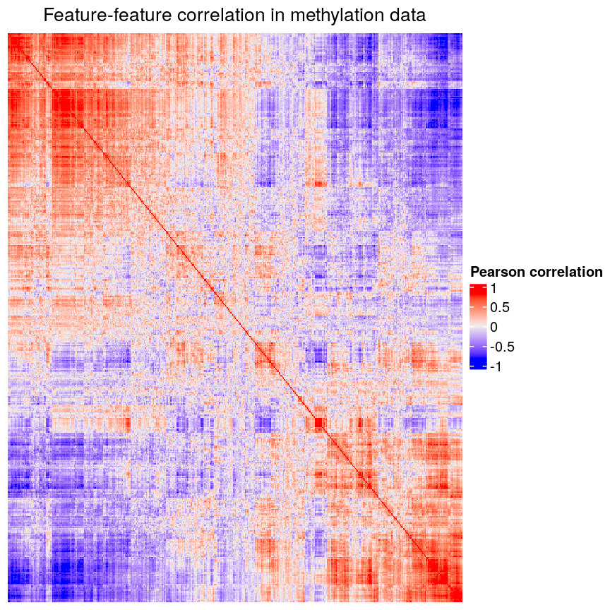Cap
Correlation between features can be problematic for technical reasons. If it is very severe, it may even make it impossible to fit a model! This is in addition to the fact that with more features than observations, we can’t even estimate the model properly. Regularisation can help us to deal with correlated features.
Challenge 1
Discuss in groups:
- Why would we observe correlated features in high-dimensional biological data?
- Why might correlated features be a problem when fitting linear models?
- What issue might correlated features present when selecting features to include in a model one at a time?
Solution
- Many of the features in biological data represent very similar information biologically. For example, sets of genes that form complexes are often expressed in very similar quantities. Similarly, methylation levels at nearby sites are often very highly correlated.
- Correlated features can make inference unstable or even impossible mathematically.
- When we are selecting features one at a time we want to pick the most predictive feature each time. When a lot of features are very similar but encode slightly different information, which of the correlated features we select to include can have a huge impact on the later stages of model selection!
Coefficient estimates of a linear model
When we fit a linear model, we’re finding the line through our data that minimises the sum of the squared residuals. We can think of that as finding the slope and intercept that minimises the square of the length of the dashed lines. In this case, the red line in the left panel is the line that accomplishes this objective, and the red dot in the right panel is the point that represents this line in terms of its slope and intercept among many different possible models, where the background colour represents how well different combinations of slope and intercept accomplish this objective.
Illustrative example demonstrated how regression coefficients are inferred under a linear model framework.
Mathematically, we can write the sum of squared residuals as
[\sum_{i=1}^N ( y_i-x’_i\beta)^2]
where $\beta$ is a vector of (unknown) covariate effects which we want to learn by fitting a regression model: the $j$-th element of $\beta$, which we denote as $\beta_j$ quantifies the effect of the $j$-th covariate. For each individual $i$, $x_i$ is a vector of $j$ covariate values and $y_i$ is the true observed value for the outcome. The notation $x’_i\beta$ indicates matrix multiplication. In this case, the result is equivalent to multiplying each element of $x_i$ by its corresponding element in $\beta$ and then calculating the sum across all of those values. The result of this product (often denoted by $\hat{y}_i$) is the predicted value of the outcome generated by the model. As such, $y_i-x’_i\beta$ can be interpreted as the prediction error, also referred to as model residual. To quantify the total error across all individuals, we sum the square residuals $( y_i-x’_i\beta)^2$ across all the individuals in our data.
Finding the value of $\beta$ that minimises the sum above is the line of best fit through our data when considering this goal of minimising the sum of squared error. However, it is not the only possible line we could use! For example, we might want to err on the side of caution when estimating effect sizes (coefficients). That is, we might want to avoid estimating very large effect sizes. This can help us to create generalisable models. This is important when models that are fitted (trained) on one dataset and then used to predict outcomes from a new dataset. Restricting parameter estimates is particularly important when analysing high-dimensional data.
Challenge 2
Discuss in groups:
- What are we minimising when we fit a linear model?
- Why are we minimising this objective? What assumptions are we making about our data when we do so?
Solution
- When we fit a linear model we are minimising the squared error. In fact, the standard linear model estimator is often known as “ordinary least squares”. The “ordinary” really means “original” here, to distinguish between this method, which dates back to ~1800, and some more “recent” (think 1940s…) methods.
- Least squares assumes that, when we account for the change in the mean of the outcome based on changes in the income, the data are normally distributed. That is, the residuals of the model, or the error left over after we account for any linear relationships in the data, are normally distributed, and have a fixed variance.
Model selection using training and test sets
Sets of models are often compared using statistics such as adjusted $R^2$, AIC or BIC. These show us how well the model is learning the data used in fitting that same model 1. However, these statistics do not really tell us how well the model will generalise to new data. This is an important thing to consider – if our model doesn’t generalise to new data, then there’s a chance that it’s just picking up on a technical or batch effect in our data, or simply some noise that happens to fit the outcome we’re modelling. This is especially important when our goal is prediction – it’s not much good if we can only predict well for samples where the outcome is already known, after all!
To get an idea of how well our model generalises, we can split the data into two - a “training” and a “test” set. We use the “training” data to fit the model, and then see its performance on the “test” data.
Schematic representation of how a dataset can be divided into a training and a test set.
One thing that often happens in this context is that large coefficient values minimise the training error, but they don’t minimise the test error on unseen data. First, we’ll go through an example of what exactly this means.
For the next few challenges, we’ll work with a set of features known to be associated with age from a paper by Horvath et al.2. Horvath et al use methylation markers alone to predict the biological age of an individual. This is useful in studying age-related disease amongst many other things.
coef_horvath <- readRDS(here::here("data/coefHorvath.rds"))
methylation <- readRDS(here::here("data/methylation.rds"))
library("SummarizedExperiment")
age <- methylation$Age
methyl_mat <- t(assay(methylation))
coef_horvath <- coef_horvath[1:20, ]
features <- coef_horvath$CpGmarker
horvath_mat <- methyl_mat[, features]
## Generate an index to split the data
set.seed(42)
train_ind <- sample(nrow(methyl_mat), 25)
Challenge 3
- Split the methylation data matrix and the age vector into training and test sets.
- Fit a model on the training data matrix and training age vector.
- Check the mean squared error on this model.
Solution
Splitting the data involves using our index to split up the matrix and the age vector into two each. We can use a negative subscript to create the test data.
train_mat <- horvath_mat[train_ind, ] train_age <- age[train_ind] test_mat <- horvath_mat[-train_ind, ] test_age <- age[-train_ind]The solution to this exercise is important because the generated objects (
train_mat,train_age,test_matandtest_age) will be used later in this episode. Please make sure that you use the same object names.To
# as.data.frame() converts train_mat into a data.frame fit_horvath <- lm(train_age ~ ., data = as.data.frame(train_mat))Using the
.syntax above together with adataargument will lead to the same result as usigntrain_age ~ tran_mat: R will fit a multivariate regression model in which each of the colums intrain_matis used as a predictor. We opted to use the.syntax because it will help us to obtain model predictions using thepredict()function.
The mean squared error of the model is the mean of the square of the residuals. This seems very low here – on average we’re only off by about a year!
mean(residuals(fit_horvath)^2)[1] 1.319628
Having trained this model, now we can check how well it does in predicting age from new dataset (the test data). Here we use the mean of the squared difference between our predictions and the true ages for the test data, or “mean squared error” (MSE). Unfortunately, it seems like this is a lot higher than the error on the training data!
mse <- function(true, prediction) {
mean((true - prediction)^2)
}
pred_lm <- predict(fit_horvath, newdata = as.data.frame(test_mat))
err_lm <- mse(test_age, pred_lm)
err_lm
[1] 223.3571
Further, if we plot true age against predicted age for the samples in the test set, we can see how well we’re really doing - ideally these would line up exactly!
par(mfrow = c(1, 1))
plot(test_age, pred_lm, pch = 19)
abline(coef = 0:1, lty = "dashed")
A scatter plot of observed age versus predicted age for individuals in the test set. Each dot represents one individual. Dashed line is used as a reference to indicate how perfect predictions would look (observed = predicted).
This figure shows the predicted ages obtained from a linear model fit plotted against the true ages, which we kept in the test dataset. If the prediction were good, the dots should follow a line. Regularisation can help us to make the model more generalisable, improving predictions for the test dataset (or any other dataset that is not used when fitting our model).
Using regularisation to impove generalisability
As stated above, restricting model parameter estimates can improve a model’s generalisability. This can be done with regularisation. The idea to add another condition to the problem we’re solving with linear regression. This condition controls the total size of the coefficients that come out. For example, we might say that the point representing the slope and intercept must fall within a certain distance of the origin, $(0, 0)$. Note that we are still trying to solve for the line that minimises the square of the residuals; we are just adding this extra constraint to our solution.
For the 2-parameter model (slope and intercept), we could visualise this constraint as a circle with a given radius. We want to find the “best” solution (in terms of minimising the residuals) that also falls within a circle of a given radius (in this case, 2).
Illustrative example demonstrated how regression coefficients are inferred under a linear model framework, with (blue line) and without (red line) regularisation. A ridge penalty is used in this example
There are multiple ways to define the distance that our solution must fall in, though. The one we’ve plotted above controls the squared sum of the coefficients, $\beta$. This is also sometimes called the $L^2$ norm. This is defined as
[\left\lVert \beta\right\lVert_2 = \sqrt{\sum_{j=1}^p \beta_j^2}]
To control this, we specify that the solution for the equation above also has to have an $L^2$ norm smaller than a certain amount. Or, equivalently, we try to minimise a function that includes our $L^2$ norm scaled by a factor that is usually written $\lambda$.
[\sum_{i=1}^N \biggl( y_i - x’_i\beta\biggr)^2 + \lambda \left\lVert \beta \right\lVert_2 ^2]
Another way of thinking about this is that when finding the best model, we’re weighing up a balance of the ordinary least squares objective and a “penalty” term that punished models with large coefficients. The balance between the penalty and the ordinary least squares objective is controlled by $\lambda$ - when $\lambda$ is large, we care a lot about the size of the coefficients. When it’s small, we don’t really care a lot. When it’s zero, we’re back to just using ordinary least squares. This type of regularisation is called ridge regression.
Why would we want to restrict our model?
It may seem an odd thing to do: to restrict the possible values of our model
parameters! Why would we want to do this? Firstly, as discussed earlier, our
model estimates can be very unstable or even difficult to calculate when we have
many correlated features. Secondly, this type of approach can make our model more
generalisable to new data. To show this, we’ll fit a model using the same set
of 20 features (stored as features) selected earlier in this episode (these
are a subset of the features identified by Horvarth et al), using both
regularised and ordinary least squares.
library("glmnet")
## glmnet() performs scaling by default, supply un-scaled data:
horvath_mat <- methyl_mat[, features] # select the first 20 sites as before
train_mat <- horvath_mat[train_ind, ] # use the same individuals as selected before
test_mat <- horvath_mat[-train_ind, ]
ridge_fit <- glmnet(x = train_mat, y = train_age, alpha = 0)
plot(ridge_fit, xvar = "lambda")
abline(h = 0, lty = "dashed")
Cap
This plot shows how the estimated coefficients for each CpG site change as we increase the penalty, $\lambda$. That is, as we decrease the size of the region that solutions can fall into, the values of the coefficients that we get back tend to decrease. In this case, coefficients trend towards zero but generally don’t reach it until the penalty gets very large. We can see that initially, some parameter estimates are really, really large, and these tend to shrink fairly rapidly.
We can also notice that some parameters “flip signs”; that is, they start off positive and become negative as lambda grows. This is a sign of collinearity, or correlated predictors. As we reduce the importance of one feature, we can “make up for” the loss in accuracy from that one feature by adding a bit of weight to another feature that represents similar information.
Since we split the data into test and training data, we can prove that ridge regression gives us a better prediction in this case:
pred_ridge <- predict(ridge_fit, newx = test_mat)
err_ridge <- apply(pred_ridge, 2, function(col) mse(test_age, col))
min(err_ridge)
[1] 46.76802
err_lm
[1] 223.3571
which_min_err <- which.min(err_ridge)
min_err_ridge <- min(err_ridge)
pred_min_ridge <- pred_ridge[, which_min_err]
We can see where on the continuum of lambdas we’ve picked a model by plotting the coefficient paths again. In this case, we’ve picked a model with fairly modest shrinkage.
chosen_lambda <- ridge_fit$lambda[which.min(err_ridge)]
plot(ridge_fit, xvar = "lambda")
abline(v = log(chosen_lambda), lty = "dashed")
Cap
Challenge 4
- Which performs better, ridge or OLS?
- Plot predicted ages for each method against the true ages. How do the predictions look for both methods? Why might ridge be performing better?
Solution
Ridge regression performs significantly better on unseen data, despite being “worse” on the training data.
min_err_ridge[1] 46.76802err_lm[1] 223.3571The ridge ones are much less spread out with far fewer extreme predictions.
all <- c(pred_lm, test_age, pred_min_ridge) lims <- range(all) par(mfrow = 1:2) plot(test_age, pred_lm, xlim = lims, ylim = lims, pch = 19 ) abline(coef = 0:1, lty = "dashed") plot(test_age, pred_min_ridge, xlim = lims, ylim = lims, pch = 19 ) abline(coef = 0:1, lty = "dashed")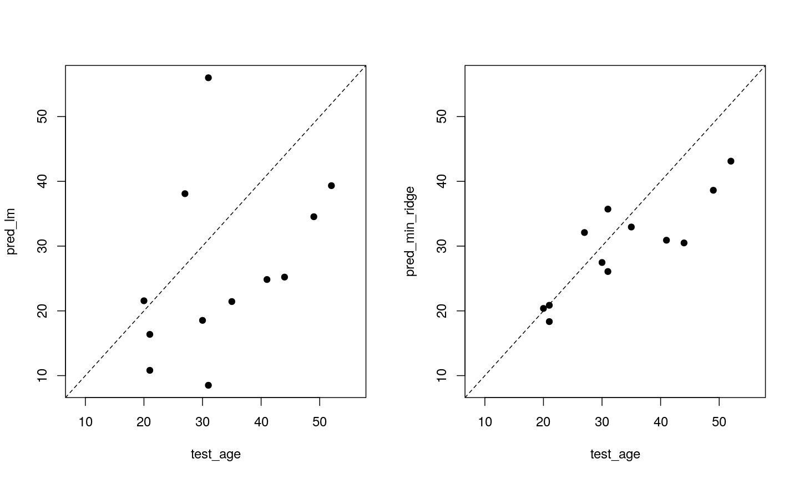Cap
LASSO regression
LASSO is another type of regularisation. In this case we use the $L^1$ norm, or the sum of the absolute values of the coefficients.
| [\left\lVert \beta \right\lVert_1 = \sum_{j=1}^p | \beta_j | ] |
This tends to produce sparse models; that is to say, it tends to remove features from the model that aren’t necessary to produce accurate predictions. This is because the region we’re restricting the coefficients to has sharp edges. So, when we increase the penalty (reduce the norm), it’s more likely that the best solution that falls in this region will be at the corner of this diagonal (i.e., one or more coefficient is exactly zero).
Illustrative example demonstrated how regression coefficients are inferred under a linear model framework, with (blue line) and without (red line) regularisation. A LASSO penalty is used in this example.
Challenge 5
- Use
glmnetto fit a LASSO model (hint: setalpha = 1).- Plot the model object. Remember that for ridge regression, we set
xvar = "lambda". What if you don’t set this? What’s the relationship between the two plots?- How do the coefficient paths differ to the ridge case?
Solution
Fitting a LASSO model is very similar to a ridge model, we just need to change the
alphasetting.fit_lasso <- glmnet(x = methyl_mat, y = age, alpha = 1)- When
xvar = "lambda", the x-axis represents increasing model sparsity from left to right, because increasing lambda increases the penalty added to the coefficients. When we instead plot the L1 norm on the x-axis, increasing L1 norm means that we are allowing our coefficients to take on increasingly large values.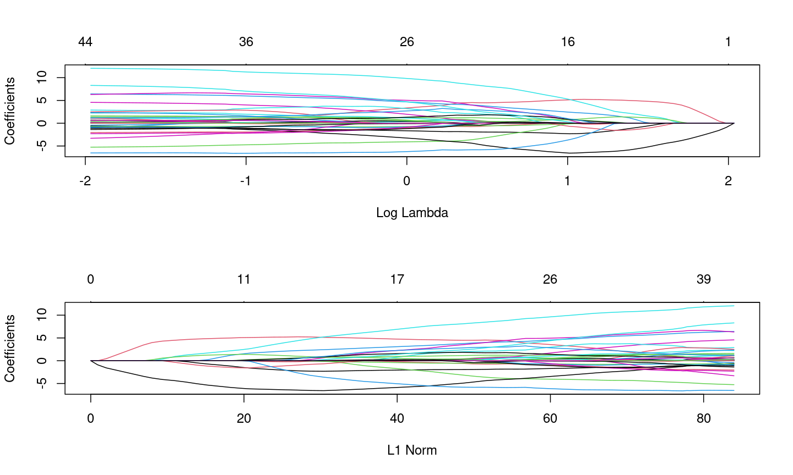plot of chunk plotlas
- The paths tend to go to exactly zero much more when sparsity increases when we use a LASSO model. In the ridge case, the paths tend towards zero but less commonly reach exactly zero.
Cross-validation to find the best value of $\lambda$
There are various methods to select the “best” value for $\lambda$. One is to split the data into $K$ chunks. We then use $K-1$ of these as the training set, and the remaining $1$ chunk as the test set. We can repeat this until we’ve rotated through all $K$ chunks, giving us a good estimate of how well each of the lambda values work in our data. This is called cross-validation, and doing this repeated test/train split gives us a better estimate of how generalisable our model is. Cross-validation is a really deep topic that we’re not going to cover in more detail today, though!
Schematic representiation of a $K$-fold cross-validation procedure.
We can use this new idea to choose a lambda value, by finding the lambda that minimises the error across each of the test and training splits.
lasso <- cv.glmnet(methyl_mat[, -1], age, alpha = 1)
plot(lasso)
Cross-validated mean squared error for different values of lambda under a LASSO penalty.
coefl <- coef(lasso, lasso$lambda.min)
selected_coefs <- as.matrix(coefl)[which(coefl != 0), 1]
## load the horvath signature to compare features
coef_horvath <- readRDS(here::here("data/coefHorvath.rds"))
## We select some of the same features! Hooray
intersect(names(selected_coefs), coef_horvath$CpGmarker)
[1] "cg02388150" "cg06493994" "cg22449114" "cg22736354" "cg03330058"
[6] "cg09809672" "cg11299964" "cg19761273" "cg26162695"
Heatmap showing methylation values for the selected CpG and how the vary with age.
Blending ridge regression and the LASSO - elastic nets
So far, we’ve used ridge regression, where alpha = 0, and LASSO regression,
where alpha = 1. What if alpha is set to a value between zero and one?
Well, this actually lets us blend the properties of ridge and LASSO
regression. This allows us to have the nice properties of the LASSO, where
uninformative variables are dropped automatically, and the nice properties
of ridge regression, where our coefficient estimates are a bit more
conservative, and as a result our predictions are a bit better.
Formally, the objective function of elastic net regression is to optimise the following function:
[\left(\sum_{i=1}^N y_i - x’_i\beta\right) + \lambda \left( \alpha \left\lVert \beta \right\lVert_1 + (1-\alpha) \left\lVert \beta \right\lVert_2 \right)]
You can see that if alpha = 1, then the L1 norm term is multiplied by one,
and the L2 norm is multiplied by zero. This means we have pure LASSO regression.
Conversely, if alpha = 0, the L2 norm term is multiplied by one, and the L1
norm is multiplied by zero, meaning we have pure ridge regression. Anything
in between gives us something in between.
The contour plots we looked at previously to visualise what this penalty looks
like for different values of alpha.
For an elastic net, the panels show the effect of the regularisation across different values of alpha
Challenge 6
- Fit an elastic net model (hint: alpha = 0.5) without cross-validation and plot the model object.
- Fit an elastic net model with cross-validation and plot the error. Compare with LASSO.
- Select the lambda within one standard error of the minimum cross-validation error (hint:
lambda.1se). Compare the coefficients with the LASSO model.- Discuss: how could we pick an
alphain the range (0, 1)? Could we justify choosing one a priori?Solution
Fitting an elastic net model is just like fitting a LASSO model. You can see that coefficients tend to go exactly to zero, but the paths are a bit less extreme than with pure LASSO; similar to ridge.
elastic <- glmnet(methyl_mat[, -1], age, alpha = 0.5) plot(elastic)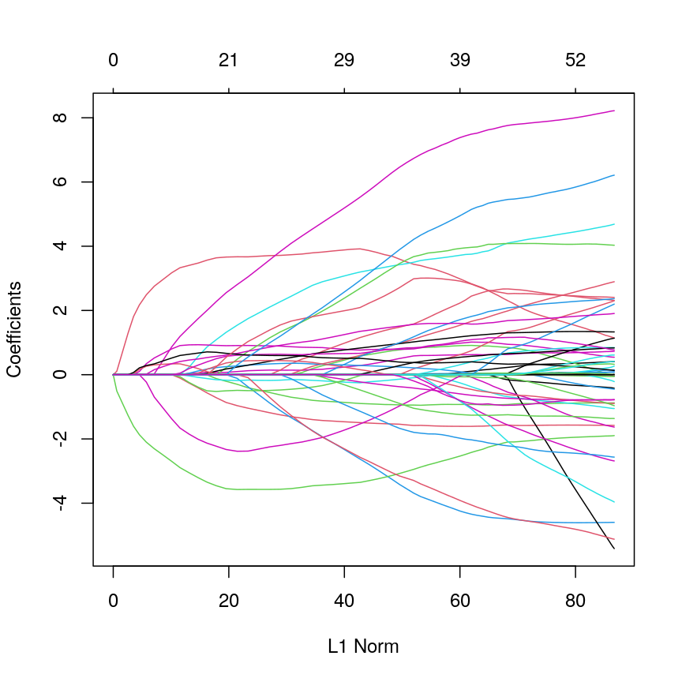plot of chunk elastic
The process of model selection is similar for elastic net models as for LASSO models.
elastic_cv <- cv.glmnet(methyl_mat[, -1], age, alpha = 0.5) plot(elastic_cv)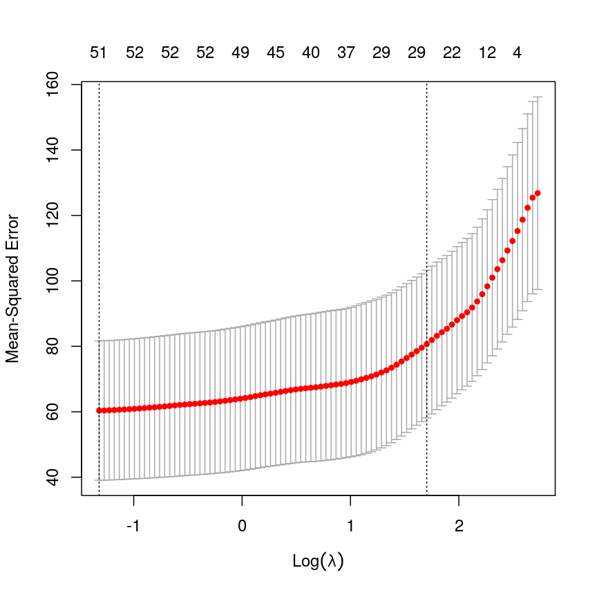Elastic
You can see that the coefficients from these two methods are broadly similar, but the elastic net coefficients are a bit more conservative. Further, more coefficients are exactly zero in the LASSO model.
coefe <- coef(elastic_cv, elastic_cv$lambda.1se) sum(coefe[, 1] == 0)[1] 4973sum(coefl[, 1] == 0)[1] 4955plot( coefl[, 1], coefe[, 1], pch = 16, xlab = "LASSO coefficients", ylab = "Elastic net coefficients" ) abline(0:1, lty = "dashed")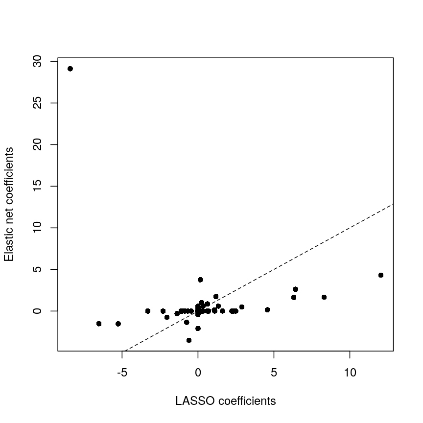LASSO-Elastic
You could pick an arbitrary value of
alpha, because arguably pure ridge regression or pure LASSO regression are also arbitrary model choices. To be rigorous and to get the best-performing model and the best inference about predictors, it’s usually best to find the best combination ofalphaandlambdausing a grid search approach in cross-validation. However, this can be very computationally demanding.
The bias-variance tradeoff
When we make predictions in statistics, there are two sources of error that primarily influence the (in)accuracy of our predictions. these are bias and variance.
The total expected error in our predictions is given by the following equation:
\[E(y - \hat{y}) = \text{Bias}^2 + \text{Variance} + \sigma^2\]Here, $\sigma^2$ represents the irreducible error, that we can never overcome. Bias results from erroneous assumptions in the model used for predictions. Fundamentally, bias means that our model is mis-specified in some way, and fails to capture some components of the data-generating process (which is true of all models). If we have failed to account for a confounding factor that leads to very inaccurate predictions in a subgroup of our population, then our model has high bias.
Variance results from sensitivity to particular properties of the input data. For example, if a tiny change to the input data would result in a huge change to our predictions, then our model has high variance.
Linear regression is an unbiased model under certain conditions. In fact, the Gauss-Markov theorem shows that under the right conditions, OLS is the best possible type of unbiased linear model.
Introducing penalties to means that our model is no longer unbiased, meaning that the coefficients estimated from our data will systematically deviate from the ground truth. Why would we do this? As we saw, the total error is a function of bias and variance. By accepting a small amount of bias, it’s possible to achieve huge reductions in the total expected error.
This bias-variance tradeoff is also why people often favour elastic net regression over pure LASSO regression.
Other types of outcomes
You may have noticed that
glmnetis written asglm, notlm. This means we can actually model a variety of different outcomes using this regularisation approach. For example, we can model binary variables using logistic regression, as shown below. The type of outcome can be specified using thefamilyargument, which specifies the family of the outcome variable.In fact,
glmnetis somewhat cheeky as it also allows you to model survival using Cox proportional hazards models, which aren’t GLMs, strictly speaking.For example, in the current dataset we can model smoking status as a binary variable in logistic regression by setting
family = "binomial".The package documentation explains this in more detail.
smoking <- as.numeric(factor(methylation$smoker)) - 1 # binary outcome table(smoking)smoking 0 1 30 7fit <- cv.glmnet(x = methyl_mat, nfolds = 5, y = smoking, family = "binomial")Warning in lognet(xd, is.sparse, ix, jx, y, weights, offset, alpha, nobs, : one multinomial or binomial class has fewer than 8 observations; dangerous ground Warning in lognet(xd, is.sparse, ix, jx, y, weights, offset, alpha, nobs, : one multinomial or binomial class has fewer than 8 observations; dangerous ground Warning in lognet(xd, is.sparse, ix, jx, y, weights, offset, alpha, nobs, : one multinomial or binomial class has fewer than 8 observations; dangerous ground Warning in lognet(xd, is.sparse, ix, jx, y, weights, offset, alpha, nobs, : one multinomial or binomial class has fewer than 8 observations; dangerous ground Warning in lognet(xd, is.sparse, ix, jx, y, weights, offset, alpha, nobs, : one multinomial or binomial class has fewer than 8 observations; dangerous ground Warning in lognet(xd, is.sparse, ix, jx, y, weights, offset, alpha, nobs, : one multinomial or binomial class has fewer than 8 observations; dangerous groundcoef <- coef(fit, s = fit$lambda.min) coef <- as.matrix(coef) coef[which(coef != 0), 1][1] -1.455287plot(fit)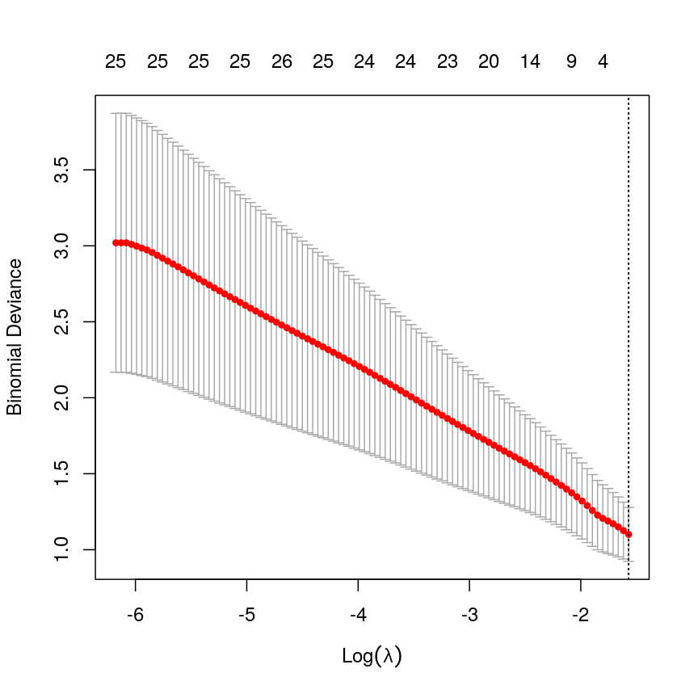Title
In this case, the results aren’t very interesting! We select an intercept-only model. However, as highlighted by the warnings above, we should not trust this result too much as the data was too small to obtain reliable results! We only included it here to provide the code that could be used to perform penalised regression for binary outcomes (i.e. penalised logistic regression).
tidymodels
A lot of the packages for fitting predictive models like regularised regression have different user interfaces. To do predictive modelling, it’s important to consider things like choosing a good performance metric and how to run normalisation. It’s also useful to compare different model “engines”.
To this end, the
tidymodelsR framework exists. We’re not doing a course on advanced topics in predictive modelling so we are not covering this framework in detail. However, the code below would be useful to perform repeated cross-validation. More information abouttidymodels, including installation instructions, can be found here.library("tidymodels") all_data <- as.data.frame(cbind(age = age, methyl_mat)) split_data <- initial_split(all_data) norm_recipe <- recipe(training(split_data)) %>% ## everything other than age is a predictor update_role(everything(), new_role = "predictor") %>% update_role(age, new_role = "outcome") %>% ## center and scale all the predictors step_center(all_predictors()) %>% step_scale(all_predictors()) ## set the "engine" to be a linear model with tunable alpha and lambda glmnet_model <- linear_reg(penalty = tune(), mixture = tune()) %>% set_engine("glmnet") ## define a workflow, with normalisation recipe into glmnet engine workflow <- workflow() %>% add_recipe(norm_recipe) %>% add_model(glmnet_model) ## 5-fold cross-validation repeated 5 times folds <- vfold_cv(training(split_data), v = 5, repeats = 5) ## define a grid of lambda and alpha parameters to search glmn_set <- parameters( penalty(range = c(-5, 1), trans = log10_trans()), mixture() ) glmn_grid <- grid_regular(glmn_set) ctrl <- control_grid(save_pred = TRUE, verbose = TRUE) ## use the metric "rmse" (root mean squared error) to grid search for the ## best model results <- workflow %>% tune_grid( resamples = folds, metrics = metric_set(rmse), control = ctrl ) ## select the best model based on RMSE best_mod <- results %>% select_best("rmse") best_mod ## finalise the workflow and fit it with all of the training data final_workflow <- finalize_workflow(workflow, best_mod) final_workflow final_model <- final_workflow %>% fit(data = training(split_data)) ## plot predicted age against true age for test data plot( testing(split_data)$age, predict(final_model, new_data = testing(split_data))$.pred, xlab = "True age", ylab = "Predicted age", pch = 16, log = "xy" ) abline(0:1, lty = "dashed")
Further reading
- An introduction to statistical learning.
- Elements of statistical learning.
- glmnet vignette.
- tidymodels.
Footnotes
-
Model selection including $R^2$, AIC and BIC are covered in the additional feature selection for regression episode of this course. ↩
Key Points
Regularisation is a way to fit a model, get better estimates of effect sizes, and perform variable selection simultaneously.
Test and training splits, or cross-validation, are a useful way to select models or hyperparameters.
Regularisation can give us a more predictive set of variables, and by restricting the magnitude of coefficients, can give us a better (and more stable) estimate of our outcome.
Regularisation is often very fast! Compared to other methods for variable selection, it is very efficient. This makes it easier to practice rigorous variable selection.
Principal component analysis
Overview
Teaching: 90 min
Exercises: 30 minQuestions
What is principal component analysis (PCA) and when can it be used?
How can we perform a PCA in R?
How many principal components are needed to explain a significant amount of variation in the data?
How to interpret the output of PCA using loadings and principal components?
Objectives
Identify situations where PCA can be used to answer research questions using high-dimensional data.
Perform a PCA on high-dimensional data.
Select the appropriate number of principal components.
Interpret the output of PCA.
Introduction
Imagine a dataset which contains many variables ($p$), close to the total number of rows in the dataset ($n$). Some of these variables are highly correlated and several form groups which you might expect to represent the same overall effect. Such datasets are challenging to analyse for several reasons, with the main problem being how to reduce dimensionality in the dataset while retaining the important features.
In this episode we will explore principal component analysis (PCA) as a popular method of analysing high-dimensional data. PCA is an unsupervised statistical method which allows large datasets of correlated variables to be summarised into smaller numbers of uncorrelated principal components that explain most of the variability in the original dataset. This is useful, for example, during initial data exploration as it allows correlations among data points to be observed and principal components to be calculated for inclusion in further analysis (e.g. linear regression). An example of PCA might be reducing several variables representing aspects of patient health (blood pressure, heart rate, respiratory rate) into a single feature.
Advantages and disadvantages of PCA
Advantages:
- It is a relatively easy to use and popular method.
- Various software/packages are available to run a PCA.
- The calculations used in a PCA are easy to understand for statisticians and non-statisticians alike.
Disadvantages:
- It assumes that variables in a dataset are correlated.
- It is sensitive to the scale at which input variables are measured. If input variables are measured at different scales, the variables with large variance relative to the scale of measurement will have greater impact on the principal components relative to variables with smaller variance. In many cases, this is not desirable.
- It is not robust against outliers, meaning that very large or small data points can have a large effect on the output of the PCA.
- PCA assumes a linear relationship between variables which is not always a realistic assumption.
- It can be difficult to interpret the meaning of the principal components, especially when including them in further analyses (e.g. inclusion in a linear regression).
Supervised vs unsupervised learning
Most statistical problems fall into one of two categories: supervised or unsupervised learning. Examples of supervised learning problems include linear regression and include analyses in which each observation has both at least one independent variable ($x$) as well as a dependent variable ($y$). In supervised learning problems the aim is to predict the value of the response given future observations or to understand the relationship between the dependent variable and the predictors. In unsupervised learning for each observation there is no dependent variable ($y$), but only a series of independent variables. In this situation there is no need for prediction, as there is no dependent variable to predict (hence the analysis can be thought as being unsupervised by the dependent variable). Instead statistical analysis can be used to understand relationships between the independent variables or between observations themselves. Unsupervised learning problems often occur when analysing high-dimensional datasets in which there is no obvious dependent variable to be predicted, but the analyst would like to understand more about patterns between groups of observations or reduce dimensionality so that a supervised learning process may be used.
Challenge 1
Descriptions of three datasets and research questions are given below. For which of these might PCA be considered a useful tool for analysing data so that the research questions may be addressed?
- An epidemiologist has data collected from different patients admitted to hospital with infectious respiratory disease. They would like to determine whether length of stay in hospital differs in patients with different respiratory diseases.
- An online retailer has collected data on user interactions with its online app and has information on the number of times each user interacted with the app, what products they viewed per interaction, and the type and cost of these products. The retailer would like to use this information to predict whether or not a user will be interested in a new product.
- A scientist has assayed gene expression levels in 1000 cancer patients and has data from probes targeting different genes in tumour samples from patients. She would like to create new variables representing relative abundance of different groups of genes to i) find out if genes form subgroups based on biological function and ii) use these new variables in a linear regression examining how gene expression varies with disease severity.
- All of the above.
Solution
In the first case, a regression model would be more suitable; perhaps a survival model. In the second, again a regression model, likely linear or logistic, would be more suitable. In the third example, PCA can help to identify modules of correlated features that explain a large amount of variation within the data.
Therefore the answer here is 3.
What is a principal component?
The first principal component is the direction of the data along which the observations vary the most. The second principal component is the direction of the data along which the observations show the next highest amount of variation. For example, Figure 1 shows biodiversity index versus percentage area left fallow for 50 farms in southern England. The red line represents the first principal component direction of the data, which is the direction along which there is greatest variability in the data. Projecting points onto this line (i.e. by finding the location on the line closest to the point) would give a vector of points with the greatest possible variance. The next highest amount of variability in the data is represented by the line perpendicular to first regression line which represents the second principal component (green line).
The second principal component is a linear combination of the variables that is uncorrelated with the first principal component. There are as many principal components as there are variables in your dataset, but as we’ll see, some are more useful at explaining your data than others. By definition, the first principal component explains more variation than other principal components.
Cap
The animation below illustrates how principal components are calculated from data. You can imagine that the black line is a rod and each red dashed line is a spring. The energy of each spring is proportional to its squared length. The direction of the first principal component is the one that minimises the total energy of all of the springs. In the animation below, the springs pull the rod, finding the direction of the first principal component when they reach equilibrium. We then use the length of the springs from the rod as the first principal component. This is explained in more detail on this Q&A website.

Cap
The first principal component’s scores ($Z_1$) are calculated using the equation:
[Z_1 = a_{11}X_1 + a_{21}X_2 +….+a_{p1}X_p]
$X_1…X_p$ represents variables in the original dataset and $a_{11}…a_{p1}$ represent principal component loadings, which can be thought of as the degree to which each variable contributes to the calculation of the principal component. We will come back to principal component scores and loadings further below.
How do we perform a PCA?
A prostate cancer dataset
The prostate dataset represents data from 97
men who have prostate cancer. The data come from a study which examined the
correlation between the level of prostate specific antigen and a number of
clinical measures in men who were about to receive a radical prostatectomy.
The data have 97 rows and 9 columns.
Columns include:
lcavol(log-transformed cancer volume),lweight(log-transformed prostate weight),lbph(log-transformed amount of benign prostate enlargement),svi(seminal vesicle invasion),lcp(log-transformed capsular penetration; amount of spread of cancer in outer walls of prostate),gleason(Gleason score; grade of cancer cells),pgg45(percentage Gleason scores 4 or 5),lpsa(log-tranformed prostate specific antigen; level of PSA in blood).age(patient age in years).
Here we will calculate principal component scores for each of the rows in this dataset, using five principal components (one for each variable included in the PCA). We will include five clinical variables in our PCA, each of the continuous variables in the prostate dataset, so that we can create fewer variables representing clinical markers of cancer progression. Standard PCAs are carried out using continuous variables only.
First, we will examine the prostate dataset (originally part of the
lasso2 package):
prostate <- readRDS(here("data/prostate.rds"))
head(prostate)
X lcavol lweight age lbph svi lcp gleason pgg45 lpsa
1 1 -0.5798185 2.769459 50 -1.386294 0 -1.386294 6 0 -0.4307829
2 2 -0.9942523 3.319626 58 -1.386294 0 -1.386294 6 0 -0.1625189
3 3 -0.5108256 2.691243 74 -1.386294 0 -1.386294 7 20 -0.1625189
4 4 -1.2039728 3.282789 58 -1.386294 0 -1.386294 6 0 -0.1625189
5 5 0.7514161 3.432373 62 -1.386294 0 -1.386294 6 0 0.3715636
6 6 -1.0498221 3.228826 50 -1.386294 0 -1.386294 6 0 0.7654678
Note that each row of the dataset represents a single patient.
We will create a subset of the data including only the clinical variables we want to use in the PCA.
pros2 <- prostate[, c("lcavol", "lweight", "lbph", "lcp", "lpsa")]
head(pros2)
lcavol lweight lbph lcp lpsa
1 -0.5798185 2.769459 -1.386294 -1.386294 -0.4307829
2 -0.9942523 3.319626 -1.386294 -1.386294 -0.1625189
3 -0.5108256 2.691243 -1.386294 -1.386294 -0.1625189
4 -1.2039728 3.282789 -1.386294 -1.386294 -0.1625189
5 0.7514161 3.432373 -1.386294 -1.386294 0.3715636
6 -1.0498221 3.228826 -1.386294 -1.386294 0.7654678
Do we need to standardise the data?
Now we compare the variances between variables in the dataset.
apply(pros2, 2, var)
lcavol lweight lbph lcp lpsa
1.389157 0.246642 2.104840 1.955102 1.332476
par(mfrow = c(1, 2))
hist(pros2$lweight, breaks = "FD")
hist(pros2$lbph, breaks = "FD")
Alt
Note that variance is greatest for lbph and lowest for lweight. It is clear
from this output that we need to scale each of these variables before including
them in a PCA analysis to ensure that differences in variances between variables
do not drive the calculation of principal components. In this example we
standardise all five variables to have a mean of 0 and a standard
deviation of 1.
Challenge 2
Why might it be necessary to standardise variables before performing a PCA?
Can you think of datasets where it might not be necessary to standardise variables? Discuss.
- To make the results of the PCA interesting.
- If you want to ensure that variables with different ranges of values contribute equally to analysis.
- To allow the feature matrix to be calculated faster, especially in cases where there are a lot of input variables.
- To allow both continuous and categorical variables to be included in the PCA.
- All of the above.
Solution
2. Scaling the data isn’t guaranteed to make the results more interesting. It also won’t affect how quickly the output will be calculated, whether continuous and categorical variables are present or not.
It is done to ensure that all features have equal weighting in the resulting PCs.
You may not want to standardise datasets which contain continuous variables all measured on the same scale (e.g. gene expression data or RNA sequencing data). In this case, variables with very little sample-to-sample variability may represent only random noise, and standardising the data would give these extra weight in the PCA.
Next we will carry out a PCA using the prcomp() function in base R. The input
data (pros2) is in the form of a matrix. Note that the scale = TRUE argument
is used to standardise the variables to have a mean 0 and standard deviation of
1.
pca.pros <- prcomp(pros2, scale = TRUE, center = TRUE)
pca.pros
Standard deviations (1, .., p=5):
[1] 1.5648756 1.1684678 0.7452990 0.6362941 0.4748755
Rotation (n x k) = (5 x 5):
PC1 PC2 PC3 PC4 PC5
lcavol 0.5616465 -0.23664270 0.01486043 0.22708502 -0.75945046
lweight 0.2985223 0.60174151 -0.66320198 -0.32126853 -0.07577123
lbph 0.1681278 0.69638466 0.69313753 0.04517286 -0.06558369
lcp 0.4962203 -0.31092357 0.26309227 -0.72394666 0.25253840
lpsa 0.5665123 -0.01680231 -0.10141557 0.56487128 0.59111493
How many principal components do we need?
We have calculated one principal component for each variable in the original dataset. How do we choose how many of these are necessary to represent the true variation in the data, without having extra components that are unnecessary?
Let’s look at the relative importance of each component using summary.
summary(pca.pros)
Importance of components:
PC1 PC2 PC3 PC4 PC5
Standard deviation 1.5649 1.1685 0.7453 0.63629 0.4749
Proportion of Variance 0.4898 0.2731 0.1111 0.08097 0.0451
Cumulative Proportion 0.4898 0.7628 0.8739 0.95490 1.0000
This returns the proportion of variance in the data explained by each of the (p = 5) principal components. In this example, PC1 explains approximately 49% of variance in the data, PC2 27% of variance, PC3 a further 11%, PC4 approximately 8% and PC5 around 5%.
Let us visualise this. A plot of the amount of variance accounted for by each PC is also called a scree plot. Note that the amount of variance accounted for by a principal component is also called eigenvalue and thus the y-axis in scree plots if often labelled “eigenvalue”.
Often, scree plots show a characteristic pattern where initially, the variance drops rapidly with each additional principal component. But then there is an “elbow” after which the variance decreases more slowly. The total variance explained up to the elbow point is sometimes interpreted as structural variance that is relevant and should be retained versus noise which may be discarded after the elbow.
# calculate variance explained
varExp <- (pca.pros$sdev^2) / sum(pca.pros$sdev^2) * 100
# calculate percentage variance explained using output from the PCA
varDF <- data.frame(Dimensions = 1:length(varExp), varExp = varExp)
# create new dataframe with five rows, one for each principal component
plot(varDF)
Alt
The screeplot shows that the first principal component explains most of the variance in the data (>50%) and each subsequent principal component explains less and less of the total variance. The first two principal components explain >70% of variance in the data. But what do these two principal components mean?
What are loadings and principal component scores?
Most PCA functions will produce two main output matrices: the principal component scores and the loadings. The matrix of principal component scores has as many rows as there were observations in the input matrix. These scores are what is usually visualised or used for down-stream analyses. The matrix of loadings (also called rotation matrix) has as many rows as there are features in the original data. It contains information about how the (usually centered and scaled) original data relate to the PC scores.
When calling a PCA object generated with prcomp(), the loadings are printed by default:
pca.pros
Standard deviations (1, .., p=5):
[1] 1.5648756 1.1684678 0.7452990 0.6362941 0.4748755
Rotation (n x k) = (5 x 5):
PC1 PC2 PC3 PC4 PC5
lcavol 0.5616465 -0.23664270 0.01486043 0.22708502 -0.75945046
lweight 0.2985223 0.60174151 -0.66320198 -0.32126853 -0.07577123
lbph 0.1681278 0.69638466 0.69313753 0.04517286 -0.06558369
lcp 0.4962203 -0.31092357 0.26309227 -0.72394666 0.25253840
lpsa 0.5665123 -0.01680231 -0.10141557 0.56487128 0.59111493
The principal component scores are obtained by carrying out matrix multiplication of the (usually centered and scaled) original data times the loadings. The following callout demonstrates this.
Computing a PCA “by hand”
The rotation matrix obtained in a PCA is identical to the eigenvectors of the covariance matrix of the data. Multiplying these with the (centered and scaled) data yields the PC scores:
pros2.scaled <- scale(pros2) # centre and scale the Prostate data pros2.cov <- cov(pros2.scaled) #generate covariance matrix pros2.covlcavol lweight lbph lcp lpsa lcavol 1.0000000 0.1941283 0.027349703 0.675310484 0.7344603 lweight 0.1941283 1.0000000 0.434934636 0.100237795 0.3541204 lbph 0.0273497 0.4349346 1.000000000 -0.006999431 0.1798094 lcp 0.6753105 0.1002378 -0.006999431 1.000000000 0.5488132 lpsa 0.7344603 0.3541204 0.179809410 0.548813169 1.0000000pros2.eigen <- eigen(pros2.cov) # preform eigen decomposition pros2.eigen # The slot $vectors = rotation of the PCAeigen() decomposition $values [1] 2.4488355 1.3653171 0.5554705 0.4048702 0.2255067 $vectors [,1] [,2] [,3] [,4] [,5] [1,] -0.5616465 0.23664270 0.01486043 0.22708502 0.75945046 [2,] -0.2985223 -0.60174151 -0.66320198 -0.32126853 0.07577123 [3,] -0.1681278 -0.69638466 0.69313753 0.04517286 0.06558369 [4,] -0.4962203 0.31092357 0.26309227 -0.72394666 -0.25253840 [5,] -0.5665123 0.01680231 -0.10141557 0.56487128 -0.59111493# generate PC scores by by hand, using matrix multiplication my.pros2.pcs <- pros2.scaled %*% pros2.eigen$vectors # compare results par(mfrow=c(1,2)) plot(pca.pros$x[,1:2], main="prcomp()") abline(h=0, v=0, lty=2) plot(my.pros2.pcs[,1:2], main="\"By hand\"", xlab="PC1", ylab="PC2") abline(h=0, v=0, lty=2)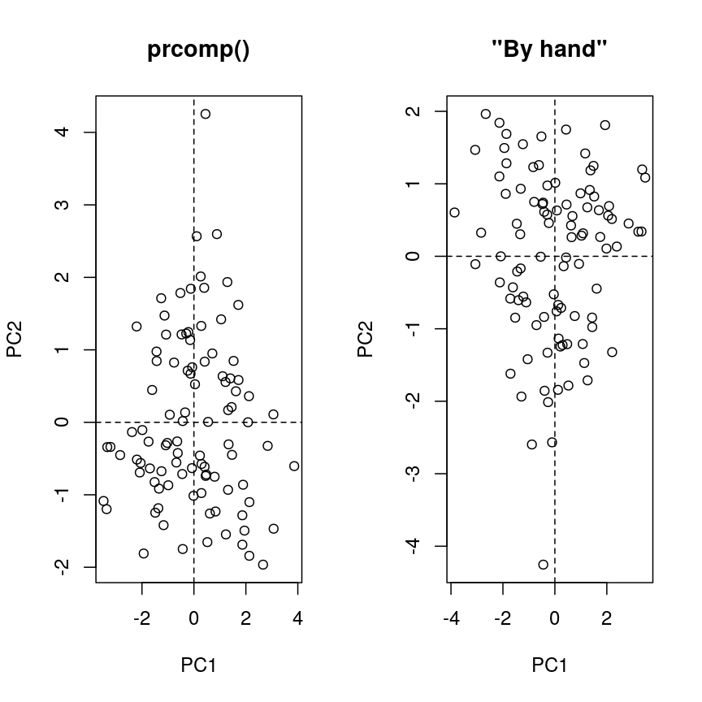plot of chunk pca-by-hand
par(mfrow=c(1,1)) # Note that the axis orientations may be swapped but the relative positions of the dots should be the same in both plots.
One way to visualise how principal components relate to the original variables
is by creating a biplot. Biplots usually show two principal components plotted
against each other. Observations are sometimes labelled with numbers. The
contribution of each original variable to the principal components displayed
is then shown by arrows (generated from those two columns of the rotation matrix that
correspond to the principal components shown). NB, there are several biplot
implementations in different R libraries. It is thus a good idea to specify
the desired package when calling biplot(). A biplot of the first two principal
components can be generated as follows:
stats::biplot(pca.pros, xlim = c(-0.3, 0.3))
Alt
This biplot shows the position of each patient on a 2-dimensional plot where
loadings can be observed via the red arrows associated with each of
the variables. The variables lpsa, lcavol and lcp are associated with
positive values on PC1 while positive values on PC2 are associated with the
variables lbph and lweight. The length of the arrows indicates how much
each variable contributes to the calculation of each principal component.
The left and bottom axes show normalised principal component scores. The axes
on the top and right of the plot are used to interpret the loadings, where
loadings are scaled by the standard deviation of the principal components
(pca.pros$sdev) times the square root the number of observations.
Finally, you need to know that PC scores and rotations may have different slot names, depending on the PCA implementation you use. Here are some examples:
| library::command() | PC scores | Loadings |
|---|---|---|
| stats::prcomp() | $x | $rotation |
| stats::princomp() | $scores | $loadings |
| PCAtools::pca() | $rotated | $loadings |
Using PCA to analyse gene expression data
In this section you will carry out your own PCA using the Bioconductor package PCAtools
applied to gene expression data to explore the topics covered above.
PCAtools provides functions that can be used to explore data via PCA and
produce useful figures and analysis tools. The package is made for the somewhat unusual
Bioconductor style of data tables (observations in columns, features in rows). When
using Bioconductor data sets and PCAtools, it is thus not necessary to transpose the data.
A gene expression dataset of cancer patients
The dataset we will be analysing in this lesson includes two subsets of data:
- a matrix of gene expression data showing microarray results for different probes used to examine gene expression profiles in 91 different breast cancer patient samples.
- metadata associated with the gene expression results detailing information from patients from whom samples were taken.
Let’s load the PCAtools package and the data.
library("PCAtools")
We will first load the microarray breast cancer gene expression data and associated metadata, downloaded from the Gene Expression Omnibus.
library("SummarizedExperiment")
cancer <- readRDS(here::here("data/cancer_expression.rds"))
mat <- assay(cancer)
metadata <- colData(cancer)
View(mat)
#nrow=22215 probes
#ncol=91 samples
View(metadata)
#nrow=91
#ncol=8
all(colnames(mat) == rownames(metadata))
[1] TRUE
#Check that column names and row names match
#If they do should return TRUE
The ‘mat’ variable contains a matrix of gene expression profiles for each sample. Rows represent gene expression measurements and columns represent samples. The ‘metadata’ variable contains the metadata associated with the gene expression data including the name of the study from which data originate, the age of the patient from which the sample was taken, whether or not an oestrogen receptor was involved in their cancer and the grade and size of the cancer for each sample (represented by rows).
Microarray data are difficult to analyse for several reasons. Firstly, they are typically high-dimensional and therefore are subject to the same difficulties associated with analysing high dimensional data outlined above (i.e. p>n, large numbers of rows, multiple possible response variables, curse of dimensionality). Secondly, formulating a research question using microarray data can be difficult, especially if not much is known a priori about which genes code for particular phenotypes of interest. Finally, exploratory analysis, which can be used to help formulate research questions and display relationships, is difficult using microarray data due to the number of potentially interesting response variables (i.e. expression data from probes targeting different genes).
If researchers hypothesise that groups of genes (e.g. biological pathways) may be associated with different phenotypic characteristics of cancers (e.g. histologic grade, tumour size), using statistical methods that reduce the number of columns in the microarray matrix to a smaller number of dimensions representing groups of genes would help visualise the data and address research questions regarding the effect different groups of genes have on disease progression.
Using the PCAtools we will apply a PCA to the cancer
gene expression data, plot the amount of variation in the data explained by
each principal component and plot the most important principal components
against each other as well as understanding what each principal component
represents.
Challenge 3
Apply a PCA to the cancer gene expression data using the
pca()function fromPCAtools. You can use the help files in PCAtools to find out about thepca()function (typehelp("pca")or?pcain R).Let us assume we only care about the principal components accounting for the top 80% of the variance in the dataset. Use the
removeVarargument inpca()to remove the PCs accounting for the bottom 20%.As in the example using prostate data above, examine the first 5 rows and columns of rotated data and loadings from your PCA.
Solution
pc <- pca(mat, metadata = metadata) #Many PCs explain a very small amount of the total variance in the data #Remove the lower 20% of PCs with lower variance pc <- pca(mat, metadata = metadata, removeVar = 0.2) #Explore other arguments provided in pca pc$rotated[1:5, 1:5]PC1 PC2 PC3 PC4 PC5 GSM65752 -29.79105 43.866788 3.255903 -40.663138 15.3427597 GSM65753 -37.33911 -15.244788 -4.948201 -6.182795 9.4725870 GSM65755 -29.41462 7.846858 -22.880525 -16.149669 22.3821009 GSM65757 -33.35286 1.343573 -22.579568 2.200329 15.0082786 GSM65758 -40.51897 -8.491125 5.288498 14.007364 0.8739772pc$loadings[1:5, 1:5]PC1 PC2 PC3 PC4 PC5 206378_at -0.0024680993 -0.053253543 -0.004068209 0.04068635 0.015078376 205916_at -0.0051557973 0.001315022 -0.009836545 0.03992371 0.038552048 206799_at 0.0005684075 -0.050657061 -0.009515725 0.02610233 0.006208078 205242_at 0.0130742288 0.028876408 0.007655420 0.04449641 -0.001061205 206509_at 0.0019031245 -0.054698479 -0.004667356 0.01566468 0.001306807which.max(pc$loadings[, 1])[1] 49pc$loadings[49, ]PC1 PC2 PC3 PC4 PC5 215281_x_at 0.03752947 -0.007369379 0.006243377 -0.008242589 -0.004783206 PC6 PC7 PC8 PC9 PC10 215281_x_at 0.01194012 -0.002822407 -0.01216792 0.001137451 -0.0009056616 PC11 PC12 PC13 PC14 PC15 215281_x_at -0.00196034 -0.0001676705 0.00699201 -0.002897995 -0.0005044658 PC16 PC17 PC18 PC19 PC20 215281_x_at -0.0004547916 0.002277035 -0.006199078 0.002708574 -0.006217326 PC21 PC22 PC23 PC24 PC25 215281_x_at 0.00516745 0.007625912 0.003434534 0.005460017 0.001477415 PC26 PC27 PC28 PC29 PC30 215281_x_at 0.002350428 0.0007183107 -0.0006195515 0.0006349803 0.00413627 PC31 PC32 PC33 PC34 PC35 215281_x_at 0.0001322301 0.003182956 -0.002123462 -0.001042769 -0.001729869 PC36 PC37 PC38 PC39 PC40 215281_x_at -0.006556369 0.005766949 0.002537993 -0.0002846248 -0.00018195 PC41 PC42 PC43 PC44 PC45 215281_x_at -0.0007970789 0.003888626 -0.008210075 -0.0009570174 0.0007998935 PC46 PC47 PC48 PC49 PC50 215281_x_at -0.0006931441 -0.005717836 0.005189649 0.002591188 0.0007810259 PC51 PC52 PC53 PC54 PC55 215281_x_at 0.006610815 0.005371134 -0.001704796 -0.002286475 0.001365417 PC56 PC57 PC58 PC59 PC60 215281_x_at 0.003529892 0.0003375981 0.009895923 -0.001564423 -0.006989092 PC61 PC62 PC63 PC64 PC65 215281_x_at 0.000971273 0.001345406 -0.003575415 -0.0005588113 0.006516669 PC66 PC67 PC68 PC69 PC70 215281_x_at -0.008770186 0.006699641 0.01284606 -0.005041574 0.007845653 PC71 PC72 PC73 PC74 PC75 215281_x_at 0.003964697 -0.01104367 -0.001506485 -0.001583824 0.003798343 PC76 PC77 PC78 PC79 PC80 215281_x_at 0.004817252 -0.001290033 -0.004402926 -0.003440367 -0.0001646198 PC81 PC82 PC83 PC84 PC85 215281_x_at 0.003923775 0.003179556 -0.0004388192 9.664648e-05 0.003501335 PC86 PC87 PC88 PC89 PC90 215281_x_at -0.00112973 0.006489667 -0.0005039785 -0.004296355 -0.002751513 PC91 215281_x_at -0.00383085which.max(pc$loadings[, 2])[1] 27pc$loadings[27, ]PC1 PC2 PC3 PC4 PC5 211122_s_at 0.01649085 0.05090275 -0.003378728 0.05178144 -0.003742393 PC6 PC7 PC8 PC9 PC10 211122_s_at -0.00543753 -0.03522848 -0.006333521 0.01575401 0.004732546 PC11 PC12 PC13 PC14 PC15 211122_s_at 0.004687599 -0.01349892 0.005207937 -0.01731898 0.02323893 PC16 PC17 PC18 PC19 PC20 211122_s_at -0.02069509 0.01477432 0.005658529 0.02667751 -0.01333503 PC21 PC22 PC23 PC24 PC25 211122_s_at -0.003254036 0.003572342 0.01416779 -0.005511838 -0.02582847 PC26 PC27 PC28 PC29 PC30 PC31 211122_s_at 0.03405417 -0.01797345 0.01826328 0.005123959 0.01300763 0.0127127 PC32 PC33 PC34 PC35 PC36 211122_s_at 0.002477672 0.01933214 0.03017661 -0.01935071 -0.01960912 PC37 PC38 PC39 PC40 PC41 211122_s_at 0.004411188 -0.01263612 -0.02019279 -0.01441513 -0.0310399 PC42 PC43 PC44 PC45 PC46 211122_s_at -0.02540426 0.0007949801 -0.00200195 -0.01748543 0.006881834 PC47 PC48 PC49 PC50 PC51 211122_s_at 0.006690698 -0.004000732 -0.02747926 -0.006963189 -0.02232332 PC52 PC53 PC54 PC55 PC56 211122_s_at -0.0003089115 -0.01604491 0.005649511 -0.02629501 0.02332997 PC57 PC58 PC59 PC60 PC61 211122_s_at -0.01248022 -0.01563245 0.005369433 0.009445262 -0.005209349 PC62 PC63 PC64 PC65 PC66 211122_s_at 0.01787645 0.01629425 0.02457665 -0.02384242 0.002814479 PC67 PC68 PC69 PC70 PC71 211122_s_at 0.0004584731 0.007939733 -0.009554166 -0.003967123 0.01825668 PC72 PC73 PC74 PC75 PC76 211122_s_at -0.00580374 -0.02236727 0.001295688 -0.02264723 0.006855855 PC77 PC78 PC79 PC80 PC81 211122_s_at 0.004995447 -0.008404118 0.00442875 -0.001027912 0.006104406 PC82 PC83 PC84 PC85 PC86 211122_s_at -0.01988441 0.009667348 -0.008248781 0.01198369 0.01221713 PC87 PC88 PC89 PC90 PC91 211122_s_at -0.003864842 -0.02876816 -0.01771452 -0.02164973 0.004593411The function
pca()is used to perform PCA, and uses as inputs a matrix (mat) containing continuous numerical data in which rows are data variables and columns are samples, andmetadataassociated with the matrix in which rows represent samples and columns represent data variables. It has options to centre or scale the input data before a PCA is performed, although in this case gene expression data do not need to be transformed prior to PCA being carried out as variables are measured on a similar scale (values are comparable between rows). The output of thepca()function includes a lot of information such as loading values for each variable (loadings), principal component scores (rotated) and the amount of variance in the data explained by each principal component.Rotated data shows principal component scores for each sample and each principal component. Loadings the contribution each variable makes to each principal component.
Scaling variables for PCA
When running
pca()above, we kept the default setting,scale=FALSE. That means genes with higher variation in their expression levels should have higher loadings, which is what we are interested in. Whether or not to scale variables for PCA will depend on your data and research question.Note that this is different from normalising gene expression data. Gene expression data have to be normalised before donwstream analyses can be carried out. This is to reduce to effect technical and other potentially confounding factors. We assume that the expression data we use had been noralised previously.
Choosing how many components are important to explain the variance in the data
As in the example using the prostate dataset we can use a screeplot to
compare the proportion of variance in the data explained by each principal
component. This allows us to understand how much information in the microarray
dataset is lost by projecting the observations onto the first few principal
components and whether these principal components represent a reasonable
amount of the variation. The proportion of variance explained should sum to one.
There are no clear guidelines on how many principal components should be included in PCA: your choice depends on the total variability of the data and the size of the dataset. We often look at the ‘elbow’ on the screeplot as an indicator that the addition of principal components does not drastically contribute to explain the remaining variance or choose an arbitory cut off for proportion of variance explained.
Challenge 4
Using the
screeplot()function inPCAtools, create a screeplot to show proportion of variance explained by each principal component. Explain the output of the screeplot in terms of proportion of variance in data explained by each principal component.Solution
screeplot(pc, axisLabSize = 5, titleLabSize = 8)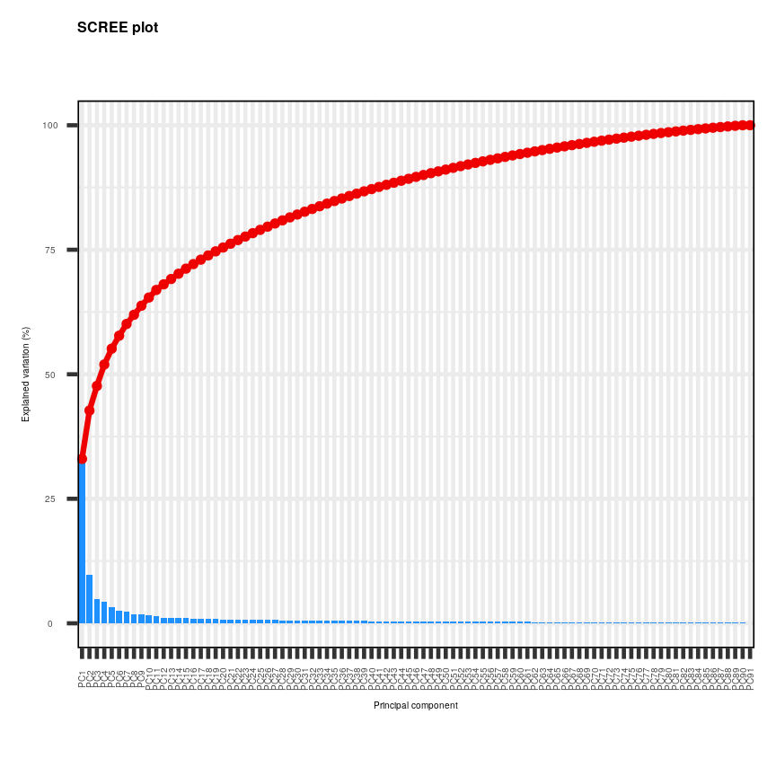Alt
Note that first principal component (PC1) explains more variation than other principal components (which is always the case in PCA). The screeplot shows that the first principal component only explains ~33% of the total variation in the micrarray data and many principal components explain very little variation. The red line shows the cumulative percentage of explained variation with increasing principal components. Note that in this case 18 principal components are needed to explain over 75% of variation in the data. This is not an unusual result for complex biological datasets including genetic information as clear relationships between groups are sometimes difficult to observe in the data. The screeplot shows that using a PCA we have reduced 91 predictors to 18 in order to explain a significant amount of variation in the data. See additional arguments in screeplot function for improving the appearance of the plot.
Investigating the principal components
Once the most important principal components have been identified using
screeplot(), these can be explored in more detail by plotting principal components
against each other and highlighting points based on variables in the metadata.
This will allow any potential clustering of points according to demographic or
phenotypic variables to be seen.
We can use biplots to look for patterns in the output from the PCA. Note that there
are two functions called biplot(), one in the package PCAtools and one in
stats. Both functions produce biplots but their scales are different!
Challenge 5
Create a biplot of the first two principal components from your PCA using
biplot()function inPCAtools. Seehelp("PCAtools::biplot")for arguments and their meaning. For instance,laborcolBymay be useful.Examine whether the data appear to form clusters. Explain your results.
Solution
biplot(pc, lab = NULL, colby = 'Grade', legendPosition = 'top')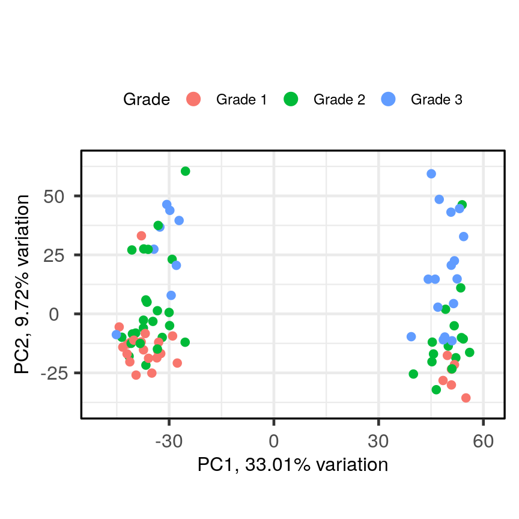Alt
The biplot shows the position of patient samples relative to PC1 and PC2 in a 2-dimensional plot. Note that two groups are apparent along the PC1 axis according to expressions of different genes while no separation can be seem along the PC2 axis. Labels of patient samples are automatically added in the biplot. Labels for each sample are added by default, but can be removed if there is too much overlap in names. Note that
PCAtoolsdoes not scale biplot in the same way as biplot using the stats package.
Let’s consider this biplot in more detail, and also display the loadings:
Challenge 6
Use
colbyandlabarguments inbiplot()to explore whether these two groups may cluster by patient age or by whether or not the sample expresses the oestrogen receptor gene (ER+ or ER-).Note: You may see a warning about
ggrepel. This happens when there are many labels but little space for plotting. This is not usually a serious problem - not all labels will be shown.Solution
PCAtools::biplot(pc, lab = paste0(pc$metadata$Age,'years'), colby = 'ER', hline = 0, vline = 0, legendPosition = 'right')Warning: ggrepel: 35 unlabeled data points (too many overlaps). Consider increasing max.overlaps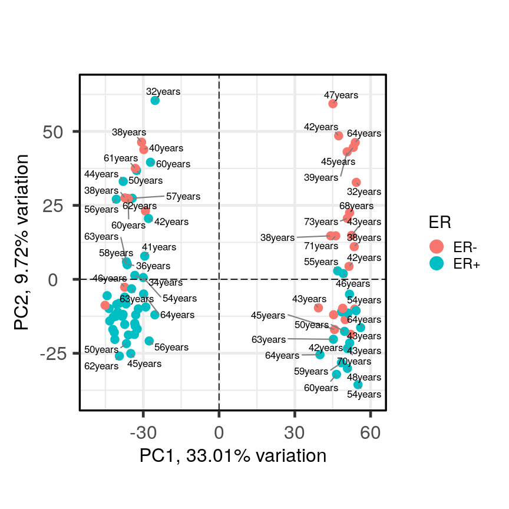Alt
It appears that one cluster has more ER+ samples than the other group.
So far, we have only looked at a biplot of PC1 versus PC2 which only gives part
of the picture. The pairplots() function in PCAtools can be used to create
multiple biplots including different principal components.
pairsplot(pc)
Alt
The plots show two apparent clusters involving the first principal component
only. No other clusters are found involving other principal components. Each dot
is coloured differently along a gradient of blues. This can potentially help identifying
the same observation/individual in several panels. Here too, the argument colby allows
you to set custom colours.
Finally, it can sometimes be of interest to compare how certain variables contribute
to different principal components. This can be visualised with plotloadings() from
the PCAtools package. The function checks the range of loadings for each
principal component specified (default: first five PCs). It then selects the features
in the top and bottom 5% of these ranges and displays their loadings. This behaviour
can be adjusted with the rangeRetain argument, which has 0.1 as the default value (i.e.
5% on each end of the range). NB, if there are too many labels to be plotted, you will see
a warning. This is not a serious problem.
plotloadings(pc, c("PC1"), rangeRetain = 0.1)
plot of chunk loadingsplots
plotloadings(pc, c("PC2"), rangeRetain = 0.1)
plot of chunk loadingsplots
plotloadings(pc, c("PC1", "PC2"), rangeRetain = 0.1)
plot of chunk loadingsplots
You can see how the third code line prooces more dots, some of which do not have extreme loadings. This is because all loadings selected for any PC are shown for all other PCs. For instance, it is plausible that features which have high loadings on PC1 may have lower ones on PC2.
Using PCA output in further analysis
The output of PCA can be used to interpret data or can be used in further analyses. For example, the PCA outputs new variables (principal components) which represent several variables in the original dataset. These new variables are useful for further exploring data, for example, comparing principal component scores between groups or including the new variables in linear regressions. Because the principal components are uncorrelated (and independent) they can be included together in a single linear regression.
Principal component regression
PCA is often used to reduce large numbers of correlated variables into fewer uncorrelated variables that can then be included in linear regression or other models. This technique is called principal component regression (PCR) and it allows researchers to examine the effect of several correlated explanatory variables on a single response variable in cases where a high degree of correlation initially prevents them from being included in the same model. This is called principal componenet regression (PCR) and is just one example of how principal components can be used in further analysis of data. When carrying out PCR, the variable of interest (response/dependent variable) is regressed against the principal components calculated using PCA, rather than against each individual explanatory variable from the original dataset. As there as many principal components created from PCA as there are variables in the dataset, we must select which principal components to include in PCR. This can be done by examining the amount of variation in the data explained by each principal component (see above).
Further reading
- James, G., Witten, D., Hastie, T. & Tibshirani, R. (2013) An Introduction to Statistical Learning with Applications in R. Chapter 6.3 (Dimension Reduction Methods), Chapter 10 (Unsupervised Learning).
- Jolliffe, I.T. & Cadima, J. (2016) Principal component analysis: a review and recent developments. Phil. Trans. R. Soc A 374..
- Johnstone, I.M. & Titterington, D.M. (2009) Statistical challenges of high-dimensional data. Phil. Trans. R. Soc A 367.
- PCA: A Practical Guide to Principal Component Analysis, Analytics Vidhya.
- A One-Stop Shop for Principal Component Analysis, Towards Data Science.
Key Points
A principal component analysis is a statistical approach used to reduce dimensionality in high-dimensional datasets (i.e. where $p$ is equal or greater than $n$).
PCA may be used to create a low-dimensional set of features from a larger set of variables. Examples of when a PCA may be useful include reducing high-dimensional datasets to fewer variables for use in a linear regression and for identifying groups with similar features.
PCA is a useful dimensionality reduction technique used in the analysis of complex biological datasets (e.g. high throughput data or genetics data).
The first principal component represents the dimension along which there is maximum variation in the data. Subsequent principal components represent dimensions with progressively less variation.
Screeplots and biplots may be used to show: 1. how much variation in the data is explained by each principal component and 2. how data points cluster according to principal component scores and which variables are associated with these scores.
Factor analysis
Overview
Teaching: 25 min
Exercises: 10 minQuestions
What is factor analysis and when can it be used?
What are communality and uniqueness in factor analysis?
How to decide on the number of factors to use?
How to interpret the output of factor analysis?
Objectives
Perform a factor analysis on high-dimensional data.
Select an appropriate number of factors.
Interpret the output of factor analysis.
Introduction
Biologists often encounter high-dimensional datasets from which they wish to extract underlying features – they need to carry out dimensionality reduction. The last episode dealt with one method to achieve this this, called principal component analysis (PCA). Here, we introduce more general set of methods called factor analysis (FA).
There are two types of FA, called exploratory and confirmatory factor analysis (EFA and CFA). Both EFA and CFA aim to reproduce the observed relationships among a group of features with a smaller set of latent variables. EFA is used in a descriptive, data-driven manner to uncover which measured variables are reasonable indicators of the various latent dimensions. In contrast, CFA is conducted in an a-priori, hypothesis-testing manner that requires strong empirical or theoretical foundations. We will mainly focus on EFA here, which is used to group features into a specified number of latent factors.
Unlike with PCA, researchers using FA have to specify the number of latent variables (factors) at the point of running the analysis. Researchers may use exploratory data analysis methods (including PCA) to provide an initial estimate of how many factors adequately explain the variation observed in a dataset. In practice, a range of different values is usually tested.
An example
One scenario for using FA would be whether student scores in different subjects can be summarised by certain subject categories. Take a look at the hypothetical dataset below. If we were to run and EFA on this, we might find that the scores can be summarised well by two factors, which we can then interpret. We have labelled these hypothetical factors “mathematical ability” and “writing ability”.
plot of chunk table
So, EFA is designed to identify a specified number of unobservable factors from observable features contained in the original dataset. This is slightly different from PCA, which does not do this directly. Just to recap, PCA creates as many principal components as there are features in the dataset, each component representing a different linear combination of features. The principal components are ordered by the amount of variance they account for.
Advantages and disadvantages of Factor Analysis
There are several advantages and disadvantages of using FA as a dimensionality reduction method.
Advantages:
- FA is a useful way of combining different groups of data into known representative factors, thus reducing dimensionality in a dataset.
- FA can take into account researchers’ expert knowledge when choosing the number of factors to use, and can be used to identify latent or hidden variables which may not be apparent from using other analysis methods.
- It is easy to implement with many software tools available to carry out FA.
- Confirmatory FA can be used to test hypotheses.
Disadvantages:
- Justifying the choice of number of factors to use may be difficult if little is known about the structure of the data before analysis is carried out.
- Sometimes, it can be difficult to interpret what factors mean after analysis has been completed.
- Like PCA, standard methods of carrying out FA assume that input variables are continuous, although extensions to FA allow ordinal and binary variables to be included (after transforming the input matrix).
Prostate cancer patient data
The prostate dataset represents data from 97 men who have prostate cancer. The data come from a study which examined the correlation between the level of prostate specific antigen and a number of clinical measures in men who were about to receive a radical prostatectomy. The data have 97 rows and 9 columns.
Columns are:
lcavol: log (cancer volume)lweight: log (prostate weight)age: age (years)lbph: log (benign prostatic hyperplasia amount)svi: seminal vesicle invasionlcp: log (capsular penetration); amount of spread of cancer in outer walls of prostategleason: Gleason scorepgg45: percentage Gleason scores 4 or 5lpsa: log (prostate specific antigen)
In this example, we use the clinical variables to identify factors representing various clinical variables from prostate cancer patients. Two principal components have already been identified as explaining a large proportion of variance in the data when these data were analysed in the PCA episode. We may expect a similar number of factors to exist in the data.
Let’s subset the data to just include the log-transformed clinical variables for the purposes of this episode:
prostate <- readRDS(here("data/prostate.rds"))
View(prostate)
nrow(prostate)
[1] 97
head(prostate)
X lcavol lweight age lbph svi lcp gleason pgg45 lpsa
1 1 -0.5798185 2.769459 50 -1.386294 0 -1.386294 6 0 -0.4307829
2 2 -0.9942523 3.319626 58 -1.386294 0 -1.386294 6 0 -0.1625189
3 3 -0.5108256 2.691243 74 -1.386294 0 -1.386294 7 20 -0.1625189
4 4 -1.2039728 3.282789 58 -1.386294 0 -1.386294 6 0 -0.1625189
5 5 0.7514161 3.432373 62 -1.386294 0 -1.386294 6 0 0.3715636
6 6 -1.0498221 3.228826 50 -1.386294 0 -1.386294 6 0 0.7654678
#select five log-transformed clinical variables for further analysis
pros2 <- prostate[, c(1, 2, 4, 6, 9)]
head(pros2)
X lcavol age svi pgg45
1 1 -0.5798185 50 0 0
2 2 -0.9942523 58 0 0
3 3 -0.5108256 74 0 20
4 4 -1.2039728 58 0 0
5 5 0.7514161 62 0 0
6 6 -1.0498221 50 0 0
Performing exploratory factor analysis
EFA may be implemented in R using the factanal() function
from the stats package (which is a built-in package in base R). This
function fits a factor analysis by maximising the log-likelihood using a
data matrix as input. The number of factors to be fitted in the analysis
is specified by the user using the factors argument. Options for
transforming the factors by rotating the data in different ways are
available via the rotation argument (default is ‘none’).
Challenge 1 (3 mins)
Use the
factanal()function to identify the minimum number of factors necessary to explain most of the variation in the dataSolution
# Include one factor only pros_fa <- factanal(pros2, factors = 1) pros_faCall: factanal(x = pros2, factors = 1) Uniquenesses: X lcavol age svi pgg45 0.279 0.321 0.933 0.548 0.689 Loadings: Factor1 X 0.849 lcavol 0.824 age 0.258 svi 0.673 pgg45 0.558 Factor1 SS loadings 2.229 Proportion Var 0.446 Test of the hypothesis that 1 factor is sufficient. The chi square statistic is 6.2 on 5 degrees of freedom. The p-value is 0.287# p-value <0.05 suggests that one factor is not sufficient # we reject the null hypothesis that one factor captures full # dimensionality in the dataset # Include two factors pros_fa <- factanal(pros2, factors = 2) pros_faCall: factanal(x = pros2, factors = 2) Uniquenesses: X lcavol age svi pgg45 0.256 0.319 0.912 0.554 0.005 Loadings: Factor1 Factor2 X 0.825 0.254 lcavol 0.788 0.247 age 0.171 0.242 svi 0.584 0.324 pgg45 0.248 0.966 Factor1 Factor2 SS loadings 1.732 1.222 Proportion Var 0.346 0.244 Cumulative Var 0.346 0.591 Test of the hypothesis that 2 factors are sufficient. The chi square statistic is 0.99 on 1 degree of freedom. The p-value is 0.32# p-value >0.05 suggests that two factors is sufficient # we cannot reject the null hypothesis that two factors captures # full dimensionality in the dataset #Include three factors pros_fa <- factanal(pros2, factors = 3)Error in factanal(pros2, factors = 3): 3 factors are too many for 5 variables# Error shows that fitting three factors are not appropriate # for only 5 variables (number of factors too high)
The output of factanal() shows the loadings for each of the input variables
associated with each factor. The loadings are values between -1 and 1 which
represent the relative contribution each input variable makes to the factors.
Positive values show that these variables are positively related to the
factors, while negative values show a negative relationship between variables
and factors. Loading values are missing for some variables because R does not
print loadings less than 0.1.
There are numerous ways to select the “best” number of factors. One is to use
the minimum number of features that does not leave a significant amount of
variance unaccounted for. In practise, we repeat the factor
analysis using different values in the factors argument. If we have an
idea of how many factors there will be before analysis, we can start with
that number. The final section of the analysis output shows the results of
a hypothesis test in which the null hypothesis is that the number of factors
used in the model is sufficient to capture most of the variation in the
dataset. If the p-value is less than 0.05, we reject the null hypothesis
and accept that the number of factors included is too small. If the p-value
is greater than 0.05, we accept the null hypothesis that the number of
factors used captures variation in the data.
Like PCA, the fewer factors that can explain most of the variation in the dataset, the better. It is easier to explore and interpret results using a smaller number of factors which represent underlying features in the data.
Variance accounted for by factors - communality and uniqueness
The communality of a variable is the sum of its squared loadings. It represents the proportion of the variance in a variable that is accounted for by the FA model.
Uniqueness is the opposite of communality and represents the amount of variation in a variable that is not accounted for by the FA model. Uniqueness is calculated by subtracting the communality value from 1. If uniqueness is high for a given variable, that means this variable is not well explaind/accounted for by the factors identified.
apply(pros_fa$loadings^2, 1, sum) #communality
X lcavol age svi pgg45
0.74437666 0.68122690 0.08759426 0.44575518 0.99500020
1 - apply(pros_fa$loadings^2, 1, sum) #uniqueness
X lcavol age svi pgg45
0.2556233 0.3187731 0.9124057 0.5542448 0.0049998
Visualising the contribution of each variable to the factors
Similar to a biplot as we produced in the PCA episode, we can “plot the loadings”. This shows how each original variable contributes to each of the factors we chose to visualise.
#First, carry out factor analysis using two factors
pros_fa <- factanal(pros2, factors = 2)
#plot loadings for each factor
plot(
pros_fa$loadings[, 1],
pros_fa$loadings[, 2],
xlab = "Factor 1",
ylab = "Factor 2",
ylim = c(-1, 1),
xlim = c(-1, 1),
main = "Factor analysis of prostate data"
)
abline(h = 0, v = 0)
#add column names to each point
text(
pros_fa$loadings[, 1] - 0.08,
pros_fa$loadings[, 2] + 0.08,
colnames(pros2),
col = "blue"
)
plot of chunk biplot
Challenge 2 (3 mins)
Use the output from your factor analysis and the plots above to interpret the results of your analysis.
What variables are most important in explaining each factor? Do you think this makes sense biologically? Discuss in groups.
Solution
This plot suggests that the variables lweight and lbph are associated with high values on factor 2 (but lower values on factor 1) and the variables lcavol, lcp and lpsa are associated with high values on factor 1 (but lower values on factor 2). There appear to be two ‘clusters’ of variables which can be represented by the two factors.
The grouping of weight and enlargement (lweight and lbph) makes sense biologically, as we would expect prostate enlargement to be associated with greater weight. The groupings of lcavol, lcp, and lpsa also make sense biologically, as larger cancer volume may be expected to be associated with greater cancer spead and therefore higher PSA in the blood.
Further reading
- Gundogdu et al. (2019) Comparison of performances of Principal Component Analysis (PCA) and Factor Analysis (FA) methods on the identification of cancerous and healthy colon tissues. International Journal of Mass Spectrometry 445:116204.
- Kustra et al. (2006) A factor analysis model for functional genomics. BMC Bioinformatics 7: doi:10.1186/1471-2105-7-21.
- Yong, A.G. & Pearce, S. (2013) A beginner’s guide to factor analysis: focusing on exploratory factor analysis. Tutorials in Quantitative Methods for Psychology 9(2):79-94.
- Confirmatory factor analysis can be carried out with the package Lavaan.
- A more sophisticated implementation of EFA is available in the packages EFA.dimensions and psych.
Key Points
Factor analysis is a method used for reducing dimensionality in a dataset by reducing variation contained in multiple variables into a smaller number of uncorrelated factors.
PCA can be used to identify the number of factors to initially use in factor analysis.
The
factanal()function in R can be used to fit a factor analysis, where the number of factors is specified by the user.Factor analysis can take into account expert knowledge when deciding on the number of factors to use, but a disadvantage is that the output requires careful interpretation.
K-means
Overview
Teaching: 45 min
Exercises: 15 minQuestions
How do we detect real clusters in high-dimensional data?
How does K-means work and when should it be used?
How can we perform K-means in
R?How can we appraise a clustering and test cluster robustness?
Objectives
Understand the importance of clustering in high-dimensional data
Understand and perform K-means clustering in
R.Assess clustering performance using silhouette scores.
Assess cluster robustness using bootstrapping.
Introduction
High-dimensional data, especially in biological settings, has many sources of heterogeneity. Some of these are stochastic variation arising from measurement error or random differences between organisms. In some cases, a known grouping causes this heterogeneity (sex, treatment groups, etc). In other cases, this heterogeneity arises from the presence of unknown subgroups in the data. Clustering is a set of techniques that allows us to discover unknown groupings like this, which we can often use to discover the nature of the heterogeneity we’re investigating.
Cluster analysis involves finding groups of observations that are more similar to each other (according to some feature) than they are to observations in other groups. Cluster analysis is a useful statistical tool for exploring high-dimensional datasets as visualising data with large numbers of features is difficult. It is commonly used in fields such as bioinformatics, genomics, and image processing in which large datasets that include many features are often produced. Once groups (or clusters) of observations have been identified using cluster analysis, further analyses or interpretation can be carried out on the groups, for example, using metadata to further explore groups.
There are various ways to look for clusters of observations in a dataset using different clustering algorithms. One way of clustering data is to minimise distance between observations within a cluster and maximise distance between proposed clusters. Clusters can be updated in an iterative process so that over time we can become more confident in size and shape of clusters.
Believing in clusters
When using clustering, it’s important to realise that data may seem to group together even when these groups are created randomly. It’s especially important to remember this when making plots that add extra visual aids to distinguish clusters. For example, if we cluster data from a single 2D normal distribution and draw ellipses around the points, these clusters suddenly become almost visually convincing. This is a somewhat extreme example, since there is genuinely no heterogeneity in the data, but it does reflect what can happen if you allow yourself to read too much into faint signals.
Let’s explore this further using an example. We create two columns of data
(‘x’ and ‘y’) and partition these data into three groups (‘a’, ‘b’, ‘c’)
according to data values. We then plot these data and their allocated clusters
and put ellipses around the clusters using the stat_ellipse function
in ggplot.

plot of chunk fake-cluster
The randomly created data used here appear to form three clusters when we plot the data. Putting ellipses around the clusters can further convince us that the clusters are ‘real’. But how do we tell if clusters identified visually are ‘real’?
What is K-means clustering?
K-means clustering is a clustering method which groups data points into a user-defined number of distinct non-overlapping clusters. In K-means clustering we are interested in minimising the within-cluster variation. This is the amount that data points within a cluster differ from each other. In K-means clustering, the distance between data points within a cluster is used as a measure of within-cluster variation. Using a specified clustering algorithm like K-means clustering increases our confidence that our data can be partitioned into groups.
To carry out K-means clustering, we first pick $k$ initial points as centres or “centroids” of our clusters. There are a few ways to choose these initial “centroids”, but for simplicity let’s imagine we just pick three random co-ordinates. We then follow these two steps until convergence:
- Assign each data point to the cluster with the closest centroid
- Update centroid positions as the average of the points in that cluster
We can see this process in action in this animation:

Cap
While K-means has some advantages over other clustering methods (easy to implement and to understand), it does have some disadvantages, namely difficulties in identifying initial clusters which observations belong to and the need for the user to specifiy the number of clusters that the data should be partitioned into.
Initialisation
The algorithm used in K-means clustering finds a local rather than a global optimum, so that results of clustering are dependent on the initial cluster that each observation is randomly assigned to. This initial configuration can have a significant effect on the final configuration of the clusters, so dealing with this limitation is an important part of K-means clustering. Some strategies to deal with this problem are:
- Choose $K$ points at random from the data as the cluster centroids.
- Randomly split the data into $K$ groups, and then average these groups.
- Use the K-means++ algorithm to choose initial values.
These each have advantages and disadvantages. In general, it’s good to be aware of this limitation of K-means clustering and that this limitation can be addressed by choosing a good initialisation method, initialising clusters manually, or running the algorithm from multiple different starting points.
K-means clustering applied to single-cell RNAseq data
Let’s carry out K-means clustering in R using some real high-dimensional data.
We’re going to work with single-cell RNAseq data in these clustering challenges,
which is often very high-dimensional. Commonly, experiments profile the
expression level of 10,000+ genes in thousands of cells. Even after filtering
the data to remove low quality observations, the dataset we’re using in this
episode contains measurements for over 9,000 genes in over 3,000 cells.
One way to get a handle on a dataset of this size is to use something we covered earlier in the course - dimensionality reduction. Dimensionality reduction allows us to visualise this incredibly complex data in a small number of dimensions. In this case, we’ll be using principal component analysis (PCA) to compress the data by identifying the major axes of variation in the data, before running our clustering algorithms on this lower-dimensional data.
The scater package has some easy-to-use tools to calculate a PCA for
SummarizedExperiment objects.
Let’s load the scRNAseq data and calculate some principal components.
library("SingleCellExperiment")
library("scater")
scrnaseq <- readRDS(here::here("data/scrnaseq.rds"))
scrnaseq <- runPCA(scrnaseq, ncomponents = 15)
pcs <- reducedDim(scrnaseq)[, 1:2]
The first two principal components capture almost 50% of the variation within the data. For now, we’ll work with just these two principal components, since we can visualise those easily, and they’re a quantitative representation of the underlying data, representing the two largest axes of variation.
We can now run K-means clustering on the first and second principal components
of the scRNAseq data using the kmeans function.
set.seed(42)
cluster <- kmeans(pcs, centers = 4)
scrnaseq$kmeans <- as.character(cluster$cluster)
plotReducedDim(scrnaseq, "PCA", colour_by = "kmeans")

Title
We can see that this produces a sensible-looking partition of the data. However, is it totally clear whether there might be more or fewer clusters here?
Challenge 1
Cluster the data using a $K$ of 5, and plot it using
plotReducedDim. Save this with a variable name that’s different to what we just used, because we’ll use this again later.Solution
set.seed(42) cluster5 <- kmeans(pcs, centers = 5) scrnaseq$kmeans5 <- as.character(cluster5$cluster) plotReducedDim(scrnaseq, "PCA", colour_by = "kmeans5")
plot of chunk kmeans-ex
K-medoids (PAM)
One problem with K-means is that using the mean to define cluster centroids means that clusters can be very sensitive to outlying observations. K-medoids, also known as “partitioning around medoids (PAM)” is similar to K-means, but uses the median rather than the mean as the method for defining cluster centroids. Using the median rather than the mean reduces sensitivity of clusters to outliers in the data. K-medioids has had popular application in genomics, for example the well-known PAM50 gene set in breast cancer, which has seen some prognostic applications. The following example shows how cluster centroids differ when created using medians rather than means.
x <- rnorm(20) y <- rnorm(20) x[10] <- x[10] + 10 plot(x, y, pch = 16) points(mean(x), mean(y), pch = 16, col = "firebrick") points(median(x), median(y), pch = 16, col = "dodgerblue")
plot of chunk unnamed-chunk-1
PAM can be carried out using
pam()form theclusterpackage.
Cluster separation
When performing clustering, it is important for us to be able to measure how well our clusters are separated. One measure to test this is silhouette width. This is a number that is computed for every observation. It can range from -1 to 1. A high silhouette width means an observation is closer to other observations within the same cluster. For each cluster, the silhouette widths can then be averaged or an overall average can be taken.
More detail on silhouette widths
In more detail, each observation’s silhouette width is computed as follows:
- Compute the average distance between the focal observation and all other observations in the same cluster.
- For each of the other clusters, compute the average distance between focal observation and all observations in the other cluster. Keep the smallest of these average distances.
- Subtract (1.)-(2.) then divivde by whichever is smaller (1.) or (2).
Ideally, we would have only large positive silhouette widths, indicating that each data point is much more similar to points within its cluster than it is to the points in any other cluster. However, this is rarely the case. Often, clusters are very fuzzy, and even if we are relatively sure about the existence of discrete groupings in the data, observations on the boundaries can be difficult to confidently place in either cluster.
Here we use the silhouette function from the cluster package to calculate the
silhouette width of our K-means clustering using a distance matrix of distances
between points in the clusters.
library("cluster")
dist_mat <- dist(pcs)
sil <- silhouette(cluster$cluster, dist = dist_mat)
plot(sil, border = NA)

plot of chunk silhouette
Let’s plot the silhouette score on the original dimensions used to cluster the data. Here, we’re mapping cluster membership to point shape, and silhouette width to colour.
pc <- as.data.frame(pcs)
colnames(pc) <- c("x", "y")
pc$sil <- sil[, "sil_width"]
pc$clust <- factor(cluster$cluster)
mean(sil[, "sil_width"])
[1] 0.7065662
ggplot(pc) +
aes(x, y, shape = clust, colour = sil) +
geom_point() +
scale_colour_gradient2(
low = "dodgerblue", high = "firebrick"
) +
scale_shape_manual(
values = setNames(1:4, 1:4)
)

plot of chunk plot-silhouette
This plot shows that silhouette values for individual observations tends to be very high in the centre of clusters, but becomes quite low towards the edges. This makes sense, as points that are “between” two clusters may be more similar to points in another cluster than they are to the points in the cluster one they belong to.
Challenge 2
Calculate the silhouette width for the K of 5 clustering we did earlier. Is it better or worse than before?
Can you identify where the differences lie?
Solution
sil5 <- silhouette(cluster5$cluster, dist = dist_mat) scrnaseq$kmeans5 <- as.character(cluster5$cluster) plotReducedDim(scrnaseq, "PCA", colour_by = "kmeans5")
plot of chunk silhouette-ex
mean(sil5[, "sil_width"])[1] 0.5849979The average silhouette width is lower when k=5.
plot(sil5, border = NA)
plot of chunk unnamed-chunk-4
This seems to be because some observations in clusters 3 and 5 seem to be more similar to other clusters than the one they have been assigned to. This may indicate that K is too high.
Gap statistic
Another measure of how good our clustering is is the “gap statistic”. This compares the observed squared distance between observations in a cluster and the centre of the cluster to an “expected” squared distances. The expected distances are calculated by randomly distributing cells within the range of the original data. Larger values represent lower squared distances within clusters, and thus better clustering. We can see how this is calculated in the following example.
library("cluster") gaps <- clusGap(pcs, kmeans, K.max = 20, iter.max = 20) best_k <- maxSE(gaps$Tab[, "gap"], gaps$Tab[, "SE.sim"]) best_k plot(gaps$Tab[,"gap"], xlab = "Number of clusters", ylab = "Gap statistic") abline(v = best_k, col = "red")
Cluster robustness
When we cluster data, we want to be sure that the clusters we identify are not a result of the exact properties of the input data. That is, if the data we observed were slightly different, the clusters we would identify in this different data would be very similar. This makes it more likely that these can be reproduced.
To assess this, we can use the bootstrap. What we do here is to take a sample from the data with replacement. Sampling with replacement means that in the sample that we take, we can include points from the input data more than once. This is maybe easier to see with an example. First, we define some data:
data <- 1:5
Then, we can take a sample from this data without replacement:
sample(data, 5)
[1] 4 1 3 5 2
This sample is a subset of the original data, and points are only present once. This is the case every time even if we do it many times:
## Each column is a sample
replicate(10, sample(data, 5))
[,1] [,2] [,3] [,4] [,5] [,6] [,7] [,8] [,9] [,10]
[1,] 5 2 5 2 3 1 3 5 5 3
[2,] 4 5 4 5 4 4 1 3 1 2
[3,] 2 1 1 3 2 5 2 2 3 4
[4,] 1 4 2 1 5 3 5 1 2 5
[5,] 3 3 3 4 1 2 4 4 4 1
However, if we sample with replacement, then sometimes individual data points are present more than once.
replicate(10, sample(data, 5, replace = TRUE))
[,1] [,2] [,3] [,4] [,5] [,6] [,7] [,8] [,9] [,10]
[1,] 3 1 2 2 1 3 3 2 4 2
[2,] 1 3 2 4 2 5 2 1 2 5
[3,] 5 5 4 4 2 2 1 1 1 3
[4,] 1 1 4 2 1 4 4 5 5 4
[5,] 3 1 2 1 4 2 5 3 3 2
Bootstrapping
The bootstrap is a powerful and common statistical technique.
We would like to know about the sampling distribution of a statistic, but we don’t have any knowledge of its behaviour under the null hypothesis.
For example, we might want to understand the uncertainty around an estimate of the mean of our data. To do this, we could resample the data with replacement and calculate the mean of each average.
boots <- replicate(1000, mean(sample(data, 5, replace = TRUE))) hist(boots, breaks = "FD", main = "1,000 bootstrap samples", xlab = "Mean of sample" )
plot of chunk boots
In this case, the example is simple, but it’s possible to devise more complex statistical tests using this kind of approach.
The bootstrap, along with permutation testing, can be a very flexible and general solution to many statistical problems.
In applying the bootstrap to clustering, we want to see two things:
- Will observations within a cluster consistently cluster together in different bootstrap replicates?
- Will observations frequently swap between clusters?
In the plot below, the diagonal of the plot shows how often the clusters are reproduced in boostrap replicates. High scores on the diagonal mean that the clusters are consistently reproduced in each boostrap replicate. Similarly, the off-diagonal elements represent how often observations swap between clusters in bootstrap replicates. High scores indicate that observations rarely swap between clusters.
library("pheatmap")
library("bluster")
library("viridis")
km_fun <- function(x) {
kmeans(x, centers = 4)$cluster
}
ratios <- bootstrapStability(pcs, FUN = km_fun, clusters = cluster$cluster)
pheatmap(ratios,
cluster_rows = FALSE, cluster_cols = FALSE,
col = viridis(10),
breaks = seq(0, 1, length.out = 10)
)

plot of chunk bs-heatmap
Yellow boxes indicate values slightly greater than 1, which may be observed. These are “good” (despite missing in the colour bar).
Challenge 3
Repeat the bootstrapping process with K=5. Are the results better or worse? Can you identify where the differences occur on the
plotReducedDim?Solution
km_fun5 <- function(x) { kmeans(x, centers = 5)$cluster } set.seed(42) ratios5 <- bootstrapStability(pcs, FUN = km_fun5, clusters = cluster5$cluster) pheatmap(ratios5, cluster_rows = FALSE, cluster_cols = FALSE, col = viridis(10), breaks = seq(0, 1, length.out = 10) )
plot of chunk bs-ex
When K=5, we can see that the values on the diagonal of the matrix are smaller, indicating that the clusters aren’t exactly reproducible in the bootstrap samples.
Similarly, the off-diagonal elements are considerably lower for some elements. This indicates that observations are “swapping” between these clusters in bootstrap replicates.
Consensus clustering
One useful and generic method of clustering is consensus clustering. This method can use k-means, or other clustering methods.
The idea behind this is to bootstrap the data repeatedly, and cluster it each time, perhaps using different numbers of clusters. If a pair of data points always end up in the same cluster, it’s likely that they really belong to the same underlying cluster.
This is really computationally demanding but has been shown to perform very well in some situations. It also allows you to visualise how cluster membership changes over different values of K.
Speed
It’s worth noting that a lot of the methods we’ve discussed here are very computationally demanding. When clustering data, we may have to compare points to each other many times. This becomes more and more difficult when we have many observations and many features. This is especially problematic when we want to do things like bootstrapping that requires us to cluster the data over and over.
As a result, there are a lot of approximate methods for finding clusters in the data. For example, the mbkmeans package includes an algorithm for clustering extremely large data. The idea behind this algorithm is that if the clusters we find are robust, we don’t need to look at all of the data every time. This is very helpful because it reduces the amount of data that needs to be held in memory at once, but also because it minimises the computational cost.
Similarly, approximate nearest neighbour methods like Annoy can be used to identify what the $K$ closest points are in the data, and this can be used in some clustering methods (for example, graph-based clustering).
Generally, these methods sacrifice a bit of accuracy for a big gain in speed.
Further reading
- Wu, J. (2012) Cluster analysis and K-means clustering: An Introduction. In: Advances in K-means Clustering. Springer Berlin, Heidelberg..
- Modern statistics for modern biology, Susan Holmes and Wolfgang Huber (Chapter 5).
- Understanding K-means clustering in machine learning, Towards Data Science.
Key Points
K-means is an intuitive algorithm for clustering data.
K-means has various advantages but can be computationally intensive.
Apparent clusters in high-dimensional data should always be treated with some scepticism.
Silhouette width and bootstrapping can be used to assess how well our clustering algorithm has worked.
Hierarchical clustering
Overview
Teaching: 60 min
Exercises: 10 minQuestions
What is hierarchical clustering and how does it differ from other clustering methods?
How do we carry out hierarchical clustering in R?
What distance matrix and linkage methods should we use?
How can we validate identified clusters?
Objectives
Understand when to use hierarchical clustering on high-dimensional data.
Perform hierarchical clustering on high-dimensional data and evaluate dendrograms.
Explore different distance matrix and linkage methods.
Use the Dunn index to validate clustering methods.
Why use hierarchical clustering on high-dimensional data?
When analysing high-dimensional data in the life sciences, it is often useful to identify groups of similar data points to understand more about the relationships within the dataset. In hierarchical clustering an algorithm groups similar data points (or observations) into groups (or clusters). This results in a set of clusters, where each cluster is distinct, and the data points within each cluster have similar characteristics. The clustering algorithm works by iteratively grouping data points so that different clusters may exist at different stages of the algorithm’s progression.
Unlike K-means clustering, hierarchical clustering does not require the number of clusters $k$ to be specified by the user before the analysis is carried out. Hierarchical clustering also provides an attractive dendrogram, a tree-like diagram showing the degree of similarity between clusters.
The dendrogram is a key feature of hierarchical clustering. This tree-shaped graph allows the similarity between data points in a dataset to be visualised and the arrangement of clusters produced by the analysis to be illustrated. Dendrograms are created using a distance (or dissimilarity) that quantify how different are pairs of observations, and a clustering algorithm to fuse groups of similar data points together.
In this episode we will explore hierarchical clustering for identifying clusters in high-dimensional data. We will use agglomerative hierarchical clustering (see box) in this episode.
Agglomerative and Divisive hierarchical clustering
There are two main methods of carrying out hierarchical clustering: agglomerative clustering and divisive clustering. The former is a ‘bottom-up’ approach to clustering whereby the clustering approach begins with each data point (or observation) being regarded as being in its own separate cluster. Pairs of data points are merged as we move up the tree. Divisive clustering is a ‘top-down’ approach in which all data points start in a single cluster and an algorithm is used to split groups of data points from this main group.
The agglomerative hierarchical clustering algorithm
To start with, we measure distance (or dissimilarity) between pairs of observations. Initially, and at the bottom of the dendrogram, each observation is considered to be in its own individual cluster. We start the clustering procedure by fusing the two observations that are most similar according to a distance matrix. Next, the next-most similar observations are fused so that the total number of clusters is number of observations - 2 (see panel below). Groups of observations may then be merged into a larger cluster (see next panel below, green box). This process continues until all the observations are included in a single cluster.

Figure 1a: Example data showing two clusters of observation pairs

Figure 1b: Example data showing fusing of one observation into larger cluster
A motivating example
To motivate this lesson, let’s first look at an example where hierarchical clustering is really useful, and then we can understand how to apply it in more detail. To do this, we’ll return to the large methylation dataset we worked with in the regression lessons. Let’s load the data and look at it.
library("minfi")
library("here")
library("ComplexHeatmap")
methyl <- readRDS(here("data/methylation.rds"))
# transpose this Bioconductor dataset to show features in columns
methyl_mat <- t(assay(methyl))
Looking at a heatmap of these data, we may spot some patterns – many columns appear to have a similar methylation levels across all rows. However, they are all quite jumbled at the moment, so it’s hard to tell how many line up exactly.

plot of chunk heatmap-noclust
We can order these data to make the patterns more clear using hierarchical
clustering. To do this, we can change the arguments we pass to
Heatmap() from the ComplexHeatmap package. Heatmap()
groups features based on dissimilarity (here, Euclidean distance) and orders
rows and columns to show clustering of features and observations.
Heatmap(methyl_mat,
name = "Methylation level",
cluster_rows = TRUE, cluster_columns = TRUE,
row_dend_width = unit(0.2, "npc"),
column_dend_height = unit(0.2, "npc"),
show_row_names = FALSE, show_column_names = FALSE,
row_title="Individuals", column_title = "Methylation sites"
)

plot of chunk heatmap-clust
We can see that clustering the features (CpG sites) results in an overall gradient of high to low methylation levels from left to right. Maybe more interesting is the fact that the rows (corresponding to individuals) are now grouped according to methylation patterns. For example, 12 samples seem to have lower methylation levels for a small subset of CpG sites in the middle, relative to all the other samples. It’s not clear without investigating further what the cause of this is – it could be a batch effect, or a known grouping (e.g., old vs young samples). However, clustering like this can be a useful part of exploratory analysis of data to build hypotheses.
Now, let’s cover the inner workings of hierarchical clustering in more detail. There are two things to consider before carrying out clustering:
- how to define dissimilarity between observations using a distance matrix, and
- how to define dissimilarity between clusters and when to fuse separate clusters.
Creating the distance matrix
Agglomerative hierarchical clustering is performed in two steps: calculating the distance matrix (containing distances between pairs of observations) and iteratively grouping observations into clusters using this matrix.
There are different ways to specify a distance matrix for clustering:
- Specify distance as a pre-defined option using the
methodargument indist(). Methods includeeuclidean(default),maximumandmanhattan. - Create a self-defined function which calculates distance from a matrix or from two vectors. The function should only contain one argument.
Of pre-defined methods of calculating the distance matrix, Euclidean is one of the most commonly used. This method calculates the shortest straight-line distances between pairs of observations.
Another option is to use a correlation matrix as the input matrix to the clustering algorithm. The type of distance matrix used in hierarchical clustering can have a big effect on the resulting tree. The decision of which distance matrix to use before carrying out hierarchical clustering depends on the type of data and question to be addressed.
Linkage methods
The second step in performing hierarchical clustering after defining the distance matrix (or another function defining similarity between data points) is determining how to fuse different clusters.
Linkage is used to define dissimilarity between groups of observations (or clusters) and is used to create the hierarchical structure in the dendrogram. Different linkage methods of creating a dendrogram are discussed below.
hclust() supports various linkage methods (e.g complete,
single, ward D, ward D2, average, median) and these are also supported
within the Heatmap() function. The method used to perform hierarchical
clustering in Heatmap() can be specified by the arguments
clustering_method_rows and clustering_method_columns. Each linkage method
uses a slightly different algorithm to calculate how clusters are fused together
and therefore different clustering decisions are made depending on the linkage
method used.
Complete linkage (the default in hclust()) works by computing all pairwise
dissimilarities between data points in different clusters. For each pair of two clusters,
it sets their dissimilarity ($d$) to the maximum dissimilarity value observed
between any of these clusters’ constituent points. The two clusters
with smallest value of $d$ are then fused.
Computing a dendrogram
Dendograms are useful tools to visualise the grouping of points and clusters into bigger clusters.
We can create and plot dendrograms in R using hclust() which takes
a distance matrix as input and creates the associated tree using hierarchical
clustering. Here we create some example data to carry out hierarchical
clustering.
Let’s generate 20 data points in 2D space. Each point belongs to one of three classes. Suppose we did not know which class data points belonged to and we want to identify these via cluster analysis. Hierarchical clustering carried out on the data can be used to produce a dendrogram showing how the data is partitioned into clusters. But how do we interpret this dendrogram? Let’s explore this using our example data.
#First, create some example data with two variables x1 and x2
set.seed(450)
example_data <- data.frame(
x1 = rnorm(20, 8, 4.5),
x2 = rnorm(20, 6, 3.4)
)
#plot the data and name data points by row numbers
plot(example_data$x1, example_data$x2, type = "n")
text(
example_data$x1,
example_data$x2,
labels = rownames(example_data),
cex = 0.7
)

plot of chunk plotexample
## calculate distance matrix using euclidean distance
dist_m <- dist(example_data, method = "euclidean")
Challenge 1
Use
hclust()to implement hierarchical clustering using the distance matrixdist_mand thecompletelinkage method and plot the results as a dendrogram usingplot().Solution:
clust <- hclust(dist_m, method = "complete") plot(clust)
plot of chunk plotclustex
This dendrogram shows similarities/differences in distances between data points. Each leaf of the dendrogram represents one of the 20 data points. These leaves fuse into branches as the height increases. Observations that are similar fuse into the same branches. The height at which any two data points fuse indicates how different these two points are. Points that fuse at the top of the tree are very different from each other compared with two points that fuse at the bottom of the tree, which are quite similar. You can see this by comparing the position of similar/dissimilar points according to the scatterplot with their position on the tree.
Identifying clusters based on the dendrogram
To do this, we can make a horizontal cut through the dendrogram at a user-defined height. The sets of observations beneath this cut can be thought of as distinct clusters. For example, a cut at height 10 produces two downstream clusters while a cut at height 4 produces six downstream clusters.
We can cut the dendrogram to determine number of clusters at different heights
using cutree(). This function cuts a dendrogram into several
groups (or clusters) where the number of desired groups is controlled by the
user, by defining either k (number of groups) or h (height at which tree is
cut).
## k is a user defined parameter determining
## the desired number of clusters at which to cut the treee
cutree(clust, k = 3)
[1] 1 1 1 2 1 1 1 1 1 2 2 1 1 3 1 1 2 2 1 2
## h is a user defined parameter determining
## the numeric height at which to cut the tree
cutree(clust, h = 10)
[1] 1 1 1 2 1 1 1 1 1 2 2 1 1 3 1 1 2 2 1 2
## both give same results
four_cut <- cutree(clust, h = 4)
## we can produce the cluster each observation belongs to
## using the mutate and count functions
library(dplyr)
example_cl <- mutate(example_data, cluster = four_cut)
count(example_cl, cluster)
cluster n
1 1 2
2 2 4
3 3 1
4 4 3
5 5 4
6 6 2
7 7 3
8 8 1
#plot cluster each point belongs to on original scatterplot
library(ggplot2)
ggplot(example_cl, aes(x = x2, y = x1, color = factor(cluster))) + geom_point()

plot of chunk cutree
Note that this cut produces 8 clusters (two before the cut and another six downstream of the cut).
Challenge 2:
Identify the value of
kincutree()that gives the same output ash = 5Solution:
plot(clust) ## create horizontal line at height = 5 abline(h = 5, lty = 2)
plot of chunk h-k-ex-plot
cutree(clust, h = 5)[1] 1 2 2 3 4 5 2 5 1 6 6 2 5 7 4 4 6 6 5 6cutree(clust, k = 7)[1] 1 2 2 3 4 5 2 5 1 6 6 2 5 7 4 4 6 6 5 6five_cut <- cutree(clust, h = 5) library(dplyr) example_cl <- mutate(example_data, cluster = five_cut) count(example_cl, cluster)cluster n 1 1 2 2 2 4 3 3 1 4 4 3 5 5 4 6 6 5 7 7 1library(ggplot2) ggplot(example_cl, aes(x=x2, y = x1, color = factor(cluster))) + geom_point()
plot of chunk h-k-ex-plot
Seven clusters (
k = 7) gives similar results toh = 5. You can plot a horizontal line on the dendrogram ath = 5to help identify corresponding value ofk.
Highlighting dendrogram branches
In addition to visualising cluster identity in scatter plots, it is also possible to
highlight branches in dentrograms. In this example, we calculate a distance matrix between
samples in the methyl_mat dataset. We then draw boxes round clusters obtained with cutree.
## create a distance matrix using euclidean method
distmat <- dist(methyl_mat)
## hierarchical clustering using complete method
clust <- hclust(distmat)
## plot resulting dendrogram
plot(clust)
## draw border around three clusters
rect.hclust(clust, k = 3, border = 2:6)
## draw border around two clusters
rect.hclust(clust, k = 2, border = 2:6)

plot of chunk plot-clust-method
We can also colour clusters downstream of a specified cut using color_branches()
from the dendextend package.
## cut tree at height = 4
cut <- cutree(clust, h = 50)
library("dendextend")
avg_dend_obj <- as.dendrogram(clust)
## colour branches of dendrogram depending on clusters
plot(color_branches(avg_dend_obj, h = 50))

plot of chunk plot-coloured-branches
The effect of different linkage methods
Now let us look into changing the default behaviour of hclust(). Imagine we have two crescent-shaped point clouds as shown below.
# These two functions are to help us make crescents. Don't worry it you do not understand all this code.
# The importent bit is the object "cres", which consists of two columns (x and y coordinates of two crescents).
is.insideCircle <- function(co, r=0.5, offs=c(0,0)){
sqrt((co[,1]+offs[1])^2 + (co[,2]+offs[2])^2) <= r
}
make.crescent <- function(n){
raw <- cbind(x=runif(n)-0.5, y=runif(n)-0.5)
raw[is.insideCircle(raw) & !is.insideCircle(raw, offs=c(0, -0.2)),]
}
# make x/y data in shape of two crescents
set.seed(123)
cres1 <- make.crescent(1000) # 1st crescent
cres2 <- make.crescent(1000) # 2nd crescent
cres2[,2] <- -cres2[,2] -0.1 # flip 2nd crescent upside-down and shift down
cres2[,1] <- cres2[,1] + 0.5 # shift second crescent to the right
cres <- rbind(cres1, cres2) # concatente x/y values
plot(cres)

plot of chunk crescents
We might expect that the crescents are resolved into separate clusters. But if we run hierarchical clustering with the default arguments, we get this:
cresClass <- cutree(hclust(dist(cres)), k=2) # save partition for colouring
plot(cres, col=cresClass) # colour scatterplot by partition

plot of chunk cresClustDefault
Challenge 3
Carry out hierarchical clustering on the
cresdata that we generated above. Try out different linkage methods and usecutree()to split each resulting dendrogram into two clusters. Plot the results colouring the dots according to their inferred cluster identity.Which method(s) give you the expected clustering outcome?
Hint: Check
?hclustto see the possible values of the argumentmethod(the linkage method used).Solution:
#?hclust # "complete", "single", "ward.D", "ward.D2", "average", "mcquitty", "median" or "centroid" cresClassSingle <- cutree(hclust(dist(cres),method = "single"), k=2) plot(cres, col=cresClassSingle, main="single")
plot of chunk plot-clust-comp
cresClassWard.D <- cutree(hclust(dist(cres), method="ward.D"), k=2) plot(cres, col=cresClassWard.D, main="ward.D")
plot of chunk plot-clust-wardD
cresClassWard.D2 <- cutree(hclust(dist(cres), method="ward.D2"), k=2) plot(cres, col=cresClassWard.D2, main="ward.D2")
plot of chunk plot-clust-wardD2
cresClassAverage <- cutree(hclust(dist(cres), method="average"), k=2) plot(cres, col=cresClassAverage, main="average")
plot of chunk plot-clust-average
cresClassMcquitty <- cutree(hclust(dist(cres), method="mcquitty"), k=2) plot(cres, col=cresClassMcquitty, main="mcquitty")
plot of chunk plot-clust-mcq
cresClassMedian<- cutree(hclust(dist(cres), method="median"), k=2) plot(cres, col=cresClassMedian, main="median")
plot of chunk plot-clust-median
cresClassCentroid<- cutree(hclust(dist(cres), method="centroid"), k=2) plot(cres, col=cresClassCentroid, main="centroid")
plot of chunk plot-clust-centroid
The linkage methods
single,ward.D, andaverageresolve each crescent as a separate cluster.
The help page of hclust() gives some intuition on linkage methods. It describes complete
(the default) and single as opposite ends of a spectrum with all other methods in between.
When using complete linkage, the distance between two clusters is assumed to be the distance
between both clusters’ most distant points. This opposite it true for single linkage, where
the minimum distance between any two points, one from each of two clusters is used. Single
linkage is described as friends-of-friends appporach - and really, it groups all close-together
points into the same cluster (thus resolving one cluster per crescent). Complete linkage on the
other hand recognises that some points a the tip of a crescent are much closer to points in the
other crescent and so it splits both crescents.
Using different distance methods
So far, we’ve been using Euclidean distance to define the dissimilarity or distance between observations. However, this isn’t always the best metric for how dissimilar different observations are. Let’s make an example to demonstrate. Here, we’re creating two samples each with ten observations of random noise:
set.seed(20)
cor_example <- data.frame(
sample_a = rnorm(10),
sample_b = rnorm(10)
)
rownames(cor_example) <- paste(
"Feature", 1:nrow(cor_example)
)
Now, let’s create a new sample that has exactly the same pattern across all
our features as sample_a, just offset by 5:
cor_example$sample_c <- cor_example$sample_a + 5
You can see that this is a lot like the assay() of our methylation object
from earlier, where columns are observations or samples, and rows are features:
head(cor_example)
sample_a sample_b sample_c
Feature 1 1.1626853 -0.02013537 6.162685
Feature 2 -0.5859245 -0.15038222 4.414076
Feature 3 1.7854650 -0.62812676 6.785465
Feature 4 -1.3325937 1.32322085 3.667406
Feature 5 -0.4465668 -1.52135057 4.553433
Feature 6 0.5696061 -0.43742787 5.569606
If we plot a heatmap of this, we can see that sample_a and sample_b are
grouped together because they have a small distance to each other, despite
being quite different in their pattern across the different features.
In contrast, sample_a and sample_c are very distant, despite having
exactly the same pattern across the different features.
Heatmap(as.matrix(cor_example))

plot of chunk heatmap-cor-example
We can see that more clearly if we do a line plot:
## create a blank plot (type = "n" means don't draw anything)
## with an x range to hold the number of features we have.
## the range of y needs to be enough to show all the values for every feature
plot(
1:nrow(cor_example),
rep(range(cor_example), 5),
type = "n"
)
## draw a red line for sample_a
lines(cor_example$sample_a, col = "firebrick")
## draw a blue line for sample_b
lines(cor_example$sample_b, col = "dodgerblue")
## draw a green line for sample_c
lines(cor_example$sample_c, col = "forestgreen")

plot of chunk lineplot-cor-example
We can see that sample_a and sample_c have exactly the same pattern across
all of the different features. However, due to the overall difference between
the values, they have a high distance to each other.
We can see that if we cluster and plot the data ourselves using Euclidean
distance:
clust_dist <- hclust(dist(t(cor_example)))
plot(clust_dist)

plot of chunk clust-euc-cor-example
In some cases, we might want to ensure that samples that have similar patterns,
whether that be of gene expression, or DNA methylation, have small distances
to each other. Correlation is a measure of this kind of similarity in pattern.
However, high correlations indicate similarity, while for a distance measure
we know that high distances indicate dissimilarity. Therefore, if we wanted
to cluster observations based on the correlation, or the similarity of patterns,
we can use 1 - cor(x) as the distance metric.
The input to hclust() must be a dist object, so we also need to call
as.dist() on it before passing it in.
cor_as_dist <- as.dist(1 - cor(cor_example))
clust_cor <- hclust(cor_as_dist)
plot(clust_cor)

plot of chunk clust-cor-cor-example
Now, sample_a and sample_c that have identical patterns across the features
are grouped together, while sample_b is seen as distant because it has a
different pattern, even though its values are closer to sample_a.
Using your own distance function is often useful, especially if you have missing
or unusual data. It’s often possible to use correlation and other custom
distance functions to functions that perform hierarchical clustering, such as
pheatmap() and stats::heatmap():
## pheatmap allows you to select correlation directly
pheatmap(as.matrix(cor_example), clustering_distance_cols = "correlation")

plot of chunk heatmap-cor-cor-example
## Using the built-in stats::heatmap
heatmap(
as.matrix(cor_example),
distfun = function(x) as.dist(1 - cor(t(x)))
)

plot of chunk heatmap-cor-cor-example
Validating clusters
Now that we know how to carry out hierarchical clustering, how do we know how many clusters are optimal for the dataset?
Hierarchical clustering carried out on any dataset will produce clusters, even when there are no ‘real’ clusters in the data! We need to be able to determine whether identified clusters represent true groups in the data, or whether clusters have been identified just due to chance. In the last episode, we have introduced silhouette scores as a measure of cluster compactness and bootstrapping to assess cluster robustness. Such tests can be used to compare different clustering algorithms, for example, those fitted using different linkage methods.
Here, we introduce the Dunn index, which is a measure of cluster compactness. The Dunn index is the ratio of the smallest distance between any two clusters and to the largest intra-cluster distance found within any cluster. This can be seen as a family of indices which differ depending on the method used to compute distances. The Dunn index is a metric that penalises clusters that have larger intra-cluster variance and smaller inter-cluster variance. The higher the Dunn index, the better defined the clusters.
Let’s calculate the Dunn index for clustering carried out on the
methyl_mat dataset using the clValid package.
## calculate dunn index
## (ratio of the smallest distance between obs not in the same cluster
## to the largest intra-cluster distance)
library("clValid")
## calculate euclidean distance between points
distmat <- dist(methyl_mat)
clust <- hclust(distmat, method = "complete")
plot(clust)

plot of chunk plot-clust-dunn
cut <- cutree(clust, h = 50)
## retrieve Dunn's index for given matrix and clusters
dunn(distance = distmat, cut)
[1] 0.8823501
The value of the Dunn index has no meaning in itself, but is used to compare between sets of clusters with larger values being preferred.
Challenge 4
Examine how changing the
horkarguments incutree()affects the value of the Dunn index.Solution:
library("clValid") distmat <- dist(methyl_mat) clust <- hclust(distmat, method = "complete") plot(clust)
plot of chunk dunn-ex
#Varying h ## Obtaining the clusters cut_h_20 <- cutree(clust, h = 20) cut_h_30 <- cutree(clust, h = 30) ## How many clusters? length(table(cut_h_20))[1] 36length(table(cut_h_30))[1] 14dunn(distance = distmat, cut_h_20)[1] 1.61789dunn(distance = distmat, cut_h_30)[1] 0.8181846#Varying k ## Obtaining the clusters cut_k_10 <- cutree(clust, k = 10) cut_k_5 <- cutree(clust, k = 5) ## How many clusters? length(table(cut_k_5))[1] 5length(table(cut_k_10))[1] 10dunn(distance = distmat, cut_k_5)[1] 0.8441528dunn(distance = distmat, cut_k_10)[1] 0.7967132
The figures below show in a more systematic way how changing the values of k and
h using cutree() affect the Dunn index.
h_seq <- 70:10
h_dunn <- sapply(h_seq, function(x) dunn(distance = distmat, cutree(clust, h = x)))
k_seq <- seq(2, 10)
k_dunn <- sapply(k_seq, function(x) dunn(distance = distmat, cutree(clust, k = x)))
plot(h_seq, h_dunn, xlab = "Height (h)", ylab = "Dunn index")
grid()

Figure 3: Dunn index
You can see that at low values of h, the Dunn index can be high. But this
is not very useful - cutting the given tree at a low h value like 15 leads to allmost all observations
ending up each in its own cluster. More relevant is the second maximum in the plot, around h=55.
Looking at the dendrogram, this corresponds to k=4.
plot(k_seq, k_dunn, xlab = "Number of clusters (k)", ylab = "Dunn index")
grid()

Figure 4: Dunn index continued
For the given range of k values explored, we obtain the highest Dunn index with k=4.
This is in agreement with the previous plot.
There have been criticisms of the use of the Dunn index in validating clustering results, due to its high sensitivity to noise in the dataset. An alternative is to use silhouette scores (see the k-means clustering episode).
As we said before (see previous episode), clustering is a non-trivial task. It is important to think about the nature of your data and your expactations rather than blindly using a some algorithm for clustering or cluster validation.
Further reading
- Dunn, J. C. (1974) Well-separated clusters and optimal fuzzy partitions. Journal of Cybernetics 4(1):95–104.
- Halkidi, M., Batistakis, Y. & Vazirgiannis, M. (2001) On clustering validation techniques. Journal of Intelligent Information Systems 17(2/3):107-145.
- James, G., Witten, D., Hastie, T. & Tibshirani, R. (2013) An Introduction to Statistical Learning with Applications in R. Section 10.3.2 (Hierarchical Clustering).
- Understanding the concept of Hierarchical clustering Technique. towards data science blog.
Key Points
Hierarchical clustering uses an algorithm to group similar data points into clusters. A dendrogram is used to plot relationships between clusters (using the
hclust()function in R).Hierarchical clustering differs from k-means clustering as it does not require the user to specify expected number of clusters
The distance (dissimilarity) matrix can be calculated in various ways, and different clustering algorithms (linkage methods) can affect the resulting dendrogram.
The Dunn index can be used to validate clusters using the original dataset.